Inflammation: the body's alarm system that sometimes stays switched onPamamaga: ang alarma ng katawan na kung minsan ay hindi namamatayPanghubag: ang alarma sa lawas nga usahay dili mapalongPamamaga: ing alarma ning katawan a misan kapilan ali mamate
Inflammation is how your body fights germs and repairs injury. When you cut your finger, the area turns red, warm, and swollen for a few days while white blood cells clean up and heal it. Then the alarm switches off. In many people on dialysis, a low, steady level of inflammation stays switched on for months, even when there is no obvious infection. Doctors call this chronic (long-lasting) inflammation.Ang pamamaga ang paraan ng katawan para labanan ang mikrobyo at ayusin ang sugat. Kapag nahiwa ang daliri, namumula, umiinit, at namamaga ito nang ilang araw habang nililinis at pinagagaling ito ng mga white blood cell. Pagkatapos, namamatay ang alarma. Sa maraming taong nagda-dialysis, may mahina ngunit tuloy-tuloy na pamamaga na nananatiling nakabukas nang ilang buwan, kahit walang halatang impeksyon. Tinatawag ito ng mga doktor na chronic (pangmatagalang) pamamaga.Ang panghubag mao ang paagi sa lawas sa pagpakig-away sa kagaw ug pag-ayo sa samad. Kon maputol ang tudlo, mopula, moinit, ug mohubag kini sulod sa pipila ka adlaw samtang limpyohan ug ayohon kini sa mga white blood cell. Unya mapalong ang alarma. Sa daghang tawo nga nag-dialysis, adunay hinay pero padayon nga panghubag nga magpabilin sulod sa pipila ka bulan, bisan walay klarong impeksyon. Gitawag kini sa mga doktor nga chronic (dugay) nga panghubag.Ing pamamaga ya ing paralan ning katawan bang labanan ne ing mikrobyo at ayusan ne ing sugat. Nung masugatan ing daliri mu, mamula, mapali, at mamaga ya kilub ning apat-limang aldo bayu ne linisan at pagumpaya reng white blood cell. Kaybat, mamate ing alarma. Kareng dakal a magdialysis, atin malaram dapot tuloy-tuloy a pamamaga a manatiling makabuklat kilub ning dakal a bulan, agyang alang malino a impeksyun. Ausan da reng doktor iti chronic (malaun) a pamamaga.
This matters because long-lasting inflammation is linked to heart disease, poor appetite, muscle loss, tiredness, and anemia (low red blood cells) that responds less well to erythropoietin injections. The word linked is important: doctors know inflammation travels together with these problems, but lowering an inflammation number on a blood test has not yet been proven, by itself, to make people on dialysis live longer or feel better.Mahalaga ito dahil ang pangmatagalang pamamaga ay may kaugnayan sa sakit sa puso, mahinang gana sa pagkain, pagliit ng kalamnan, pagkapagod, at anemia (kakulangan ng pulang selula ng dugo) na hindi gaanong tumutugon sa iniksyong erythropoietin. Mahalaga ang salitang may kaugnayan: alam ng mga doktor na magkasama ang pamamaga at ang mga problemang ito, ngunit hindi pa napapatunayan na ang pagpapababa lamang ng numero ng pamamaga sa blood test ay nagpapahaba ng buhay o nagpapaginhawa sa mga nagda-dialysis.Importante kini kay ang dugay nga panghubag adunay kalabotan sa sakit sa kasingkasing, kulang nga gana sa pagkaon, pagkunhod sa kaunuran, kakapoy, ug anemia (kulang nga pula nga selula sa dugo) nga dili kaayo motubag sa indeyksiyon nga erythropoietin. Importante ang pulong nga adunay kalabotan: nahibal-an sa mga doktor nga magkauban ang panghubag ug kining mga problema, pero wala pa mapamatud-an nga ang pagpaubos lang sa numero sa panghubag sa blood test makapalugway sa kinabuhi o makapaayo sa pamati sa mga nag-dialysis.Mayalaga iti uling ing malaun a pamamaga atin kaugnayan king sakit king puso, malaram a gana king pamangan, pamaliit ning laman, kapagalan, at anemia (kulang a mayanggang selula ning dara) a ali masyadong sumagut king iniksiun a erythropoietin. Mayalaga ing salitang atin kaugnayan: balu da reng doktor a misasabe ing pamamaga ampo reng problema a reti, dapot ali pa mapatune a ing pamababa mu pamu king numero ning pamamaga king blood test makapaba ning bie o makapagumpaya kareng magdialysis.
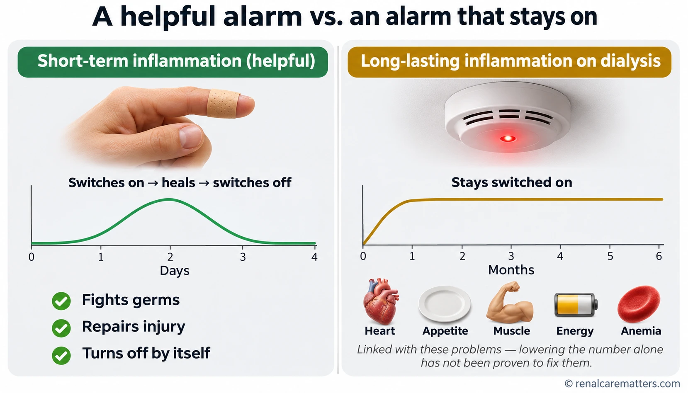
A helpful alarm switches on after an injury and turns off once healing is done. On dialysis, a low-level alarm can stay on for months; it travels with heart disease, poor appetite, muscle loss, low energy, and anemia, but lowering the number alone has not been proven to fix them.Ang nakatutulong na alarma ay bumubukas pagkatapos ng sugat at namamatay kapag gumaling na. Sa dialysis, ang mahinang alarma ay maaaring manatiling bukas nang ilang buwan; kasama nito ang sakit sa puso, mahinang gana, pagliit ng kalamnan, kawalan ng lakas, at anemia, pero hindi pa napapatunayang naaayos ang mga ito sa pagpapababa lamang ng numero.Ang makatabang nga alarma mosiga human sa samad ug mopalong kon naayo na. Sa dialysis, ang hinay nga alarma mahimong magpabilin nga nagsiga sulod sa pipila ka bulan; kauban niini ang sakit sa kasingkasing, huyang nga gana, pagkunhod sa kaunuran, kakulang sa kusog, ug anemia, pero wala pa mapamatud-an nga maayo kini pinaagi lang sa pagpaubos sa numero.Ing alarma a makatulung mabuklat kaybat ning sugat at mamate nung megumpaya ne. King dialysis, ing malaram a alarma malyaring manatiling makabuklat kilub ning dakal a bulan; kayabe na ing sakit king puso, malaram a gana, pamaliit ning laman, kawalan sikan, at anemia, dapot e pa mapatune a magumpaya la iti king pamababa mu pamu king numeru.
The idea in one sentenceAng ideya sa isang pangungusapAng ideya sa usa ka tudlingIng ideya king metung a pangungusap
A high C-reactive protein (CRP) result is a smoke alarm, not the fire. Your team's job is to look for the fire — an infection, a troubled access, too little dialysis, poor nutrition, or another illness — and treat that.Ang mataas na resulta ng C-reactive protein (CRP) ay parang smoke alarm, hindi ang mismong sunog. Trabaho ng inyong team na hanapin ang sunog — impeksyon, problema sa access, kulang na dialysis, mahinang nutrisyon, o ibang sakit — at gamutin iyon.Ang taas nga resulta sa C-reactive protein (CRP) sama sa smoke alarm, dili ang sunog mismo. Trabaho sa inyong team ang pagpangita sa sunog — impeksyon, problema sa access, kulang nga dialysis, huyang nga nutrisyon, o laing sakit — ug tambalan kana.Ing matas a resulta ning C-reactive protein (CRP) kalupa ya ning smoke alarm, e ya ing mismung sunog. Obra ning team mu ing panintun king sunog — impeksyun, problema king access, kulang a dialysis, malaram a nutrisyun, o aliwang sakit — at gamutan ya iti.
Where the inflammation comes fromSaan nanggagaling ang pamamagaAsa gikan ang panghubagNokarin manibat ing pamamaga
Failing kidneys leave waste products in the blood that keep the immune system on edge. On top of that, several everyday sources can add fuel. Most of them can be found and treated, which is why your team asks questions and examines you before deciding anything.Ang mga bato na humihina ay nag-iiwan ng dumi sa dugo na nagpapanatiling alerto sa immune system. Bukod dito, may ilang pang-araw-araw na pinagmumulan na nagdadagdag ng gatong. Karamihan sa mga ito ay nahahanap at nagagamot, kaya nagtatanong at sinusuri kayo ng inyong team bago magpasya.Ang huyang nga kidney magbilin og hugaw sa dugo nga magpabilin nga alerto sa immune system. Dugang pa, adunay pipila ka adlaw-adlaw nga tinubdan nga makadugang og gasolina. Kadaghanan niini makit-an ug matambalan, mao nga mangutana ug susihon kamo sa inyong team una magdesisyon.Deng bato a malaram mamye lang dumi king dara a manatiling alerto ing immune system. Bukud kanita, atin apat-limang aldo-aldo a pikuanan a magdagdag gatung. Ing kalakwan kareti mapalyaring akit at magamut, kanian magtanung at suriyan na ka ing team mu bayu la mamagdesisyun.
InfectionImpeksyonImpeksyonImpeksyun
The dialysis catheter, a fistula or graft, the gums and teeth, skin wounds, the lungs, or the urinary tract.Ang dialysis catheter, fistula o graft, gilagid at ngipin, sugat sa balat, baga, o daanan ng ihi.Ang dialysis catheter, fistula o graft, lagos ug ngipon, samad sa panit, baga, o agianan sa ihi.Ing dialysis catheter, fistula o graft, gilagid at ipan, sugat king balat, baga, o daralan ning ati.
The access itselfAng access mismoAng access mismoIng access mismu
A catheter in a large vein keeps a foreign surface in the blood. An old, clotted graft can also smolder.Ang catheter sa malaking ugat ay nag-iiwan ng banyagang bagay sa dugo. Ang luma at baradong graft ay maaari ring magdulot ng pamamaga.Ang catheter sa dakong ugat magbilin og langyaw nga butang sa dugo. Ang daan ug baradong graft mahimo usab nga hinungdan sa panghubag.Ing catheter king maragul a ugat mamye banyagang bage king dara. Ing matua at mebarang graft malyari mu naman yang pikuanan ning pamamaga.
Too little dialysisKulang na dialysisKulang nga dialysisKulang a dialysis
Shortened or missed sessions leave more waste and extra fluid in the body.Ang pinaikling o nalaktawang sesyon ay nag-iiwan ng mas maraming dumi at sobrang tubig sa katawan.Ang gipamubo o nalaktawan nga sesyon magbilin og daghang hugaw ug sobra nga tubig sa lawas.Ing pinaikli o melaktawang sesyon mamye dakal a dumi at sobrang danum king katawan.
Fluid overloadSobrang tubigSobra nga tubigSobrang danum
A swollen, congested gut can let bacterial products leak into the blood.Ang namamaga at masikip na bituka ay maaaring magpatagas ng produkto ng bakterya papunta sa dugo.Ang hubag ug hugot nga tinai mahimong magpatulo og produkto sa bakterya ngadto sa dugo.Ing mamaga at masikip a bituka malyaring magpatulu produktu ning bakterya king dara.
Poor nutritionMahinang nutrisyonHuyang nga nutrisyonMalaram a nutrisyun
Low protein intake and muscle loss feed into inflammation, and inflammation in turn kills appetite.Ang kulang na protina at pagliit ng kalamnan ay nagpapalala ng pamamaga, at ang pamamaga naman ay pumapatay ng gana.Ang kulang nga protina ug pagkunhod sa kaunuran makapagrabe sa panghubag, ug ang panghubag usab mopatay sa gana.Ing kulang a protina at pamaliit ning laman pasamale ing pamamaga, at ing pamamaga naman pamatayan ne ing gana.
Other illnessIbang sakitLaing sakitAliwang sakit
Diabetes, heart failure, gout, autoimmune disease, liver disease, or cancer.Diabetes, heart failure, gout, autoimmune na sakit, sakit sa atay, o kanser.Diabetes, heart failure, gout, autoimmune nga sakit, sakit sa atay, o kanser.Diabetes, heart failure, gout, autoimmune a sakit, sakit king ate, o kanser.
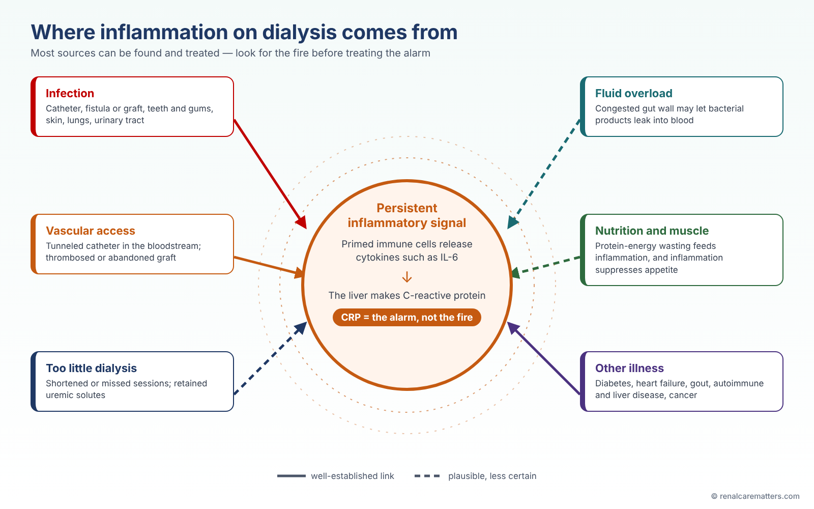
Where inflammation on dialysis comes from: infection, the vascular access, too little dialysis, fluid overload, poor nutrition, and other illnesses. Solid arrows show well-established links; dashed arrows show plausible but less certain ones. CRP is the alarm a blood test measures, not the fire.Saan nanggagaling ang pamamaga habang nagda-dialysis: impeksyon, vascular access, kulang na dialysis, sobrang tubig, mahinang nutrisyon, at ibang sakit. Ang tuloy-tuloy na arrow ay matibay na kaugnayan; ang putol-putol ay posible pero hindi pa tiyak. Ang CRP ang alarmang sinusukat ng blood test, hindi ang sunog.Asa gikan ang panghubag samtang nag-dialysis: impeksyon, vascular access, kulang nga dialysis, sobra nga tubig, huyang nga nutrisyon, ug laing sakit. Ang padayon nga arrow lig-on nga kalabotan; ang putol-putol posible pero dili pa sigurado. Ang CRP mao ang alarma nga gisukod sa blood test, dili ang sunog.Nokarin manibat ing pamamaga kabang magdialysis: impeksyun, vascular access, kulang a dialysis, sobrang danum, malaram a nutrisyun, at aliwang sakit. Ing tuloy-tuloy a arrow matibe a kaugnayan; ing putul-putul malyari dapot e pa siguradu. Ing CRP ya ing alarma a sukatan ning blood test, e ya ing sunog.
- CRP
- C-reactive protein (CRP)
What a CRP test can and cannot tell youAng kayang sabihin at hindi kayang sabihin ng CRP testUnsa ang masulti ug dili masulti sa CRP testNanu ing malyaring sabyan at ali malyaring sabyan ning CRP test
C-reactive protein is made by the liver when a messenger called interleukin-6 (IL-6) tells it that the body is under attack. One high reading may simply mean you had a cold, a dental problem, or a skin wound that week. A result that stays high on repeat testing deserves a careful search for the cause. Different laboratories report CRP in different units (mg/L or mg/dL; 1 mg/dL equals 10 mg/L), so always compare results from the same laboratory.Ginagawa ng atay ang C-reactive protein kapag sinabihan ito ng mensaherong tinatawag na interleukin-6 (IL-6) na inaatake ang katawan. Ang isang mataas na resulta ay maaaring nangangahulugan lamang na nagkaroon kayo ng sipon, problema sa ngipin, o sugat sa balat nang linggong iyon. Ang resultang nananatiling mataas sa paulit-ulit na pagsusuri ay nararapat hanapan ng sanhi. Iba-iba ang unit na ginagamit ng mga laboratoryo (mg/L o mg/dL; ang 1 mg/dL ay katumbas ng 10 mg/L), kaya ihambing ang mga resulta mula sa iisang laboratoryo.Gihimo sa atay ang C-reactive protein kon sultihan kini sa mensahero nga gitawag og interleukin-6 (IL-6) nga giatake ang lawas. Ang usa ka taas nga resulta mahimong nagpasabot lang nga nagka-ubo kamo, adunay problema sa ngipon, o samad sa panit nianang semanaha. Ang resulta nga magpabilin nga taas sa balik-balik nga pagsusi angay pangitaan sa hinungdan. Lahi-lahi ang unit sa mga laboratoryo (mg/L o mg/dL; ang 1 mg/dL katumbas sa 10 mg/L), mao nga itandi ang mga resulta gikan sa samang laboratoryo.Gagawan ning ate ing C-reactive protein nung sabyan ne ning mensaherung ausan dang interleukin-6 (IL-6) a atakian ya ing katawan. Ing metung a matas a resulta malyaring ing kayang kayulugan pamu, mekasipun ka, atin kang problema king ipan, o sugat king balat king dominggung ita. Ing resultang manatiling matas king paulit-ulit a pamanuri, kailangan yang panintunan sanhi. Aliwa-aliwa ing unit da reng laboratoryu (mg/L o mg/dL; ing 1 mg/dL kapareu na ning 10 mg/L), kanian ihambing me ing resulta manibat king pareung laboratoryu.
A CRP result cannot tell where the inflammation is, cannot measure the inside of your blood vessels, and is not a target to chase with medicine on its own. Ferritin and albumin can also shift during inflammation, so a high ferritin does not always mean you have plenty of usable iron, and a low albumin is not always about food.Hindi masasabi ng resulta ng CRP kung nasaan ang pamamaga, hindi nito nasusukat ang loob ng inyong mga ugat, at hindi ito numerong dapat habulin ng gamot nang mag-isa. Nagbabago rin ang ferritin at albumin kapag may pamamaga, kaya ang mataas na ferritin ay hindi laging nangangahulugan na sapat ang magagamit na iron, at ang mababang albumin ay hindi laging tungkol sa pagkain.Dili masulti sa resulta sa CRP kon asa ang panghubag, dili kini makasukod sa sulod sa inyong mga ugat, ug dili kini numero nga gukdon sa tambal nga ingon-ana lang. Mausab usab ang ferritin ug albumin kon adunay panghubag, mao nga ang taas nga ferritin dili kanunay nagpasabot nga igo ang magamit nga iron, ug ang ubos nga albumin dili kanunay mahitungod sa pagkaon.Ali malyaring sabyan ning resulta ning CRP nung nokarin ya ing pamamaga, ali ne asukat ing lub dareng ugat mu, at e ya numerung kailangang abulan gamot nung bukud ya. Mibabagu mu naman ing ferritin ampo ing albumin nung atin pamamaga, kanian ing matas a ferritin e pane kayulugan a sapat ing iron a agamit, at ing mababang albumin e pane tungkul king pamangan.
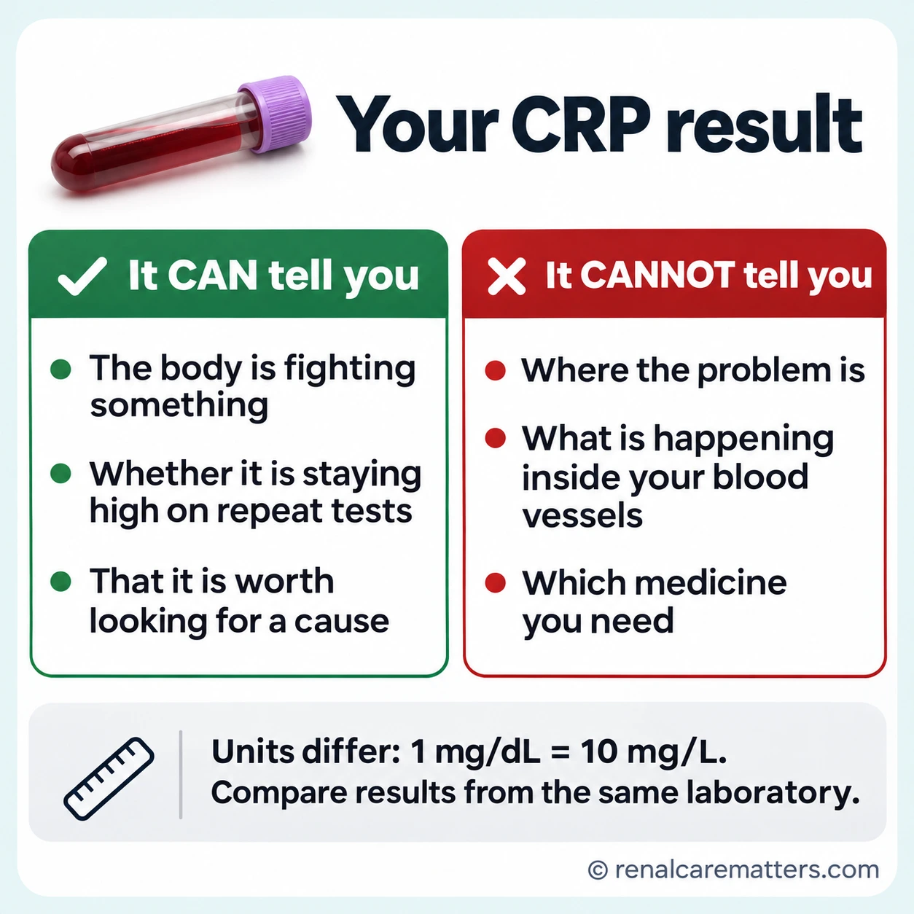
What your CRP result can tell you (the body is fighting something, whether it stays high, that a cause is worth looking for) and what it cannot (where the problem is, what is happening inside your blood vessels, which medicine you need). 1 mg/dL equals 10 mg/L.Ang kayang sabihin ng resulta ng CRP (may nilalabanan ang katawan, kung nananatili itong mataas, na dapat hanapin ang sanhi) at ang hindi nito kaya (kung nasaan ang problema, ano ang nangyayari sa loob ng mga ugat, anong gamot ang kailangan). Ang 1 mg/dL ay katumbas ng 10 mg/L.Ang masulti sa resulta sa CRP (adunay gisukol ang lawas, kon magpabilin kini nga taas, nga angay pangitaon ang hinungdan) ug ang dili niini masulti (asa ang problema, unsa ang nahitabo sa sulod sa mga ugat, unsang tambal ang kinahanglan). Ang 1 mg/dL katumbas sa 10 mg/L.Ing malyaring sabyan ning resulta ning CRP (atin lalabanan ing katawan, nung manatili yang matas, a dapat panintunan ing sanhi) ampo ing ali na kaya (nokarin ya ing problema, nanu ing mangyayari king lub dareng ugat, nanung gamot ing kailangan). Ing 1 mg/dL kapareu ning 10 mg/L.
- CRP
- C-reactive protein (CRP)
Inflammation clue checkerPantingin ng mga palatandaan ng pamamagaTigsusi sa mga timailhan sa panghubagPamanuri kareng tanda ning pamamaga
No single symptom or test proves you are inflamed. This checker gathers the clues doctors look for — how you feel, what your access looks like, and a few numbers from your monthly laboratory results — and tells you how soon to bring them to your dialysis team. Tick what applies to you in the past week and type in any results you have. Leave blank anything you do not know. Nothing you enter is saved or sent anywhere.Walang iisang sintomas o test na nagpapatunay na may pamamaga kayo. Tinitipon ng pantinging ito ang mga palatandaang hinahanap ng doktor — ang inyong pakiramdam, ang itsura ng inyong access, at ilang numero mula sa buwanang laboratory — at sinasabi kung gaano kabilis dapat ninyo itong ipaalam sa inyong dialysis team. Lagyan ng tsek ang naranasan ninyo sa nakaraang linggo at isulat ang mga resultang mayroon kayo. Iwanang blangko ang hindi ninyo alam. Walang naitatago o naipapadala sa anumang inilagay ninyo.Walay usa ka sintomas o test nga makapamatuod nga naa kamoy panghubag. Gitigom niining tigsusi ang mga timailhan nga gipangita sa doktor — ang inyong gibati, ang hitsura sa inyong access, ug pipila ka numero gikan sa binulan nga laboratory — ug isulti kon unsa ka dali ninyo kini ipahibalo sa inyong dialysis team. I-tsek ang inyong nasinati sa miaging semana ug isulat ang mga resulta nga naa kaninyo. Biyai nga blangko ang wala ninyo mahibal-an. Walay gitipigan o gipadala sa bisan unsa nga inyong gisulat.Alang metung a sintomas o test a makapatune a atin kang pamamaga. Ipun na ning pamanuri a iti deng tanda a panintunan da reng doktor — ing pamakiramdam mu, ing itsura ning access mu, at apat-limang numeru manibat king bulan-bulan a laboratory — at sabyan na nung kasaut ka kabilis dapat mung ipabalu kareng dialysis team mu. Tsekan me ing meranasan mu king milabas a dominggu at isulat me deng resulta a atin ka. Pabayan mung blangku ing e mu balu. Alang mitagu o mipadala king anggang isulat mu.
Step 1 — Warning signs (any of these today?)Hakbang 1 — Mga babala (mayroon ba ngayon?)Lakang 1 — Mga pasidaan (aduna ba karon?)Pamagdan 1 — Reng babala (atin ngeni?)
Step 2 — How you have been in the past weekHakbang 2 — Ang inyong kalagayan nitong nakaraang linggoLakang 2 — Ang inyong kahimtang sa miaging semanaPamagdan 2 — Ing kalagayan mu king milabas a dominggu
Step 3 — Your latest laboratory results (optional)Hakbang 3 — Ang pinakabagong laboratory results (opsyonal)Lakang 3 — Ang pinakabag-ong laboratory results (opsyonal)Pamagdan 3 — Deng pekabayung laboratory results (opsyonal)
Warning sign: contact your dialysis unit or go to the emergency room todayMay babala: tawagan ang dialysis unit o pumunta sa emergency room ngayonAdunay pasidaan: tawagi ang dialysis unit o adto sa emergency room karonAtin babala: tawagan ing dialysis unit o munta king emergency room ngeni
What you ticked can mean a serious infection or another emergency. Do not wait for a blood test or your next session.Ang nilagyan ninyo ng tsek ay maaaring malubhang impeksyon o ibang emergency. Huwag nang hintayin ang blood test o ang susunod na sesyon.Ang inyong gi-tsek mahimong grabeng impeksyon o laing emergency. Ayaw na hulata ang blood test o ang sunod nga sesyon.Ing tsinekan mu malyaring malalam a impeksyun o aliwang emergency. E mu na antayan ing blood test o ing susunod a sesyun.
Several clues of inflammation: tell your team this weekIlang palatandaan ng pamamaga: sabihin sa inyong team ngayong linggoPipila ka timailhan sa panghubag: isulti sa inyong team karong semanahaApat-limang tanda ning pamamaga: sabyan me ing team mu ngeni a dominggu
Together these clues suggest inflammation that deserves a search for its cause. Show this list to your nurse or nephrologist at your next session. Do not start antibiotics, pain relievers, or supplements on your own.Magkakasama, nagpapahiwatig ang mga palatandaang ito ng pamamaga na dapat hanapan ng sanhi. Ipakita ang listahang ito sa nurse o nephrologist sa susunod na sesyon. Huwag magsimula ng antibiotiko, pain reliever, o supplement nang mag-isa.Kon tingbon, kining mga timailhan nagpasabot og panghubag nga angay pangitaan sa hinungdan. Ipakita kini nga lista sa nurse o nephrologist sa sunod nga sesyon. Ayaw pagsugod og antibiotiko, pain reliever, o supplement nga kamo ra.Misasabe, deng tanda a reti pakilala da ing pamamaga a kailangang panintunan sanhi. Ipakit me ining listaan king nurse o nephrologist king susunod a sesyun. E ka magumpisa antibiotiku, pain reliever, o supplement nung bukud ka.
One clue: mention it at your next sessionIsang palatandaan: banggitin sa susunod na sesyonUsa ka timailhan: isulti sa sunod nga sesyonMetung a tanda: sabyan me king susunod a sesyun
A single clue is common and often has a simple explanation. Your team can decide whether it needs a closer look.Karaniwan ang iisang palatandaan at kadalasang may simpleng paliwanag. Ang inyong team ang magpapasya kung kailangan itong suriin pa.Kasagaran ang usa ka timailhan ug kasagaran adunay yano nga katin-awan. Ang inyong team ang modesisyon kon kinahanglan pa kini susihon.Karaniwan ing metung a tanda at maralas atin yang simpleng paliwanag. Ing team mu ing magdesisyun nung kailangan pang suriyan.
No clear clues from what you enteredWalang malinaw na palatandaan mula sa inyong inilagayWalay klarong timailhan gikan sa inyong gisulatAlang malinong tanda manibat king insulat mu
That is reassuring, but it does not rule out inflammation, especially if some results were left blank. Keep your regular follow-up.Nakagiginhawa ito, pero hindi nito inaalis ang posibilidad ng pamamaga, lalo na kung may iniwang blangko. Ituloy ang regular na follow-up.Makahupay kini, pero dili kini makawagtang sa posibilidad sa panghubag, labi na kon adunay gibiyaang blangko. Padayona ang regular nga follow-up.Makapagumpaya ya iti, dapot e na ilako ing posibilidad ning pamamaga, lalu na nung atin pinabayang blangku. Ituloy me ing regular a follow-up.
Why these clues matterBakit mahalaga ang mga palatandaang itoNganong importante kining mga timailhanBakit mayalaga deng tanda a reti
- Your CRP is above your laboratory's normal limit. CRP rises when the body is fighting something; your team will look for the source and usually repeat it.Mas mataas ang CRP ninyo kaysa normal na limitasyon ng laboratoryo. Tumataas ang CRP kapag may nilalabanan ang katawan; hahanapin ng team ang pinagmulan at kadalasang uulitin ang test.Mas taas ang inyong CRP kaysa normal nga limitasyon sa laboratoryo. Mosaka ang CRP kon adunay gisukol ang lawas; pangitaon sa team ang gigikanan ug kasagaran usbon ang test.Mas matas ing CRP mu kesa king normal a limitasyun ning laboratoryu. Tataas ing CRP nung atin lalabanan ing katawan; panintunan ning team ing pikuanan at maralas ulitan de ing test.
- Your albumin is below 3.8 g/dL. Low albumin can come from inflammation, poor intake, or fluid overload, so it is a clue, not a diagnosis.Mas mababa sa 3.8 g/dL ang albumin ninyo. Ang mababang albumin ay maaaring dahil sa pamamaga, kulang na pagkain, o sobrang tubig, kaya ito ay palatandaan, hindi diyagnosis.Ubos sa 3.8 g/dL ang inyong albumin. Ang ubos nga albumin mahimong tungod sa panghubag, kulang nga pagkaon, o sobra nga tubig, mao nga timailhan kini, dili diyagnosis.Mababa king 3.8 g/dL ing albumin mu. Ing mababang albumin malyaring uli ning pamamaga, kulang a pamangan, o sobrang danum, kanian tanda ya iti, e diyagnosis.
- Your ferritin is high while your TSAT is low. During inflammation, iron gets locked away in storage, so ferritin rises even though the bone marrow cannot use the iron.Mataas ang ferritin ninyo habang mababa ang TSAT. Kapag may pamamaga, naikukulong ang iron sa imbakan, kaya tumataas ang ferritin kahit hindi ito magamit ng bone marrow.Taas ang inyong ferritin samtang ubos ang TSAT. Kon adunay panghubag, ma-lock ang iron sa tipiganan, mao nga mosaka ang ferritin bisan dili kini magamit sa bone marrow.Matas ing ferritin mu kabang mababa ing TSAT. Nung atin pamamaga, mikulung ing iron king tagwan, kanian tataas ing ferritin agyang ali ne agamit ning bone marrow.
- Your white blood cell count is above 11. A high count often points to infection.Mas mataas sa 11 ang white blood cell count ninyo. Ang mataas na bilang ay kadalasang tanda ng impeksyon.Labaw sa 11 ang inyong white blood cell count. Ang taas nga ihap kasagaran timailhan sa impeksyon.Mas matas king 11 ing white blood cell count mu. Ing matas a bilang maralas tanda ning impeksyun.
- Falling hemoglobin despite the same or higher erythropoietin dose is a classic sign that inflammation is blocking red blood cell production.Ang bumababang hemoglobin kahit pareho o mas mataas ang dosis ng erythropoietin ay karaniwang tanda na hinaharangan ng pamamaga ang paggawa ng pulang selula ng dugo.Ang mius-os nga hemoglobin bisan pareho o mas taas ang dosis sa erythropoietin usa ka klasikong timailhan nga gibabagan sa panghubag ang paghimo og pula nga selula sa dugo.Ing mababang hemoglobin agyang pareu o mas matas ing dosis ning erythropoietin klasikung tanda ya a ing pamamaga manarang king pamaggawa mayanggang selula ning dara.
- Poor appetite and weight loss travel with inflammation and also make it worse. Your dietitian can help.Ang mahinang gana at pagbaba ng timbang ay kasama ng pamamaga at nagpapalala rin dito. Makatutulong ang inyong dietitian.Ang huyang nga gana ug pagniwang kauban sa panghubag ug makapagrabe usab niini. Makatabang ang inyong dietitian.Ing malaram a gana at pamaba ning timbang kauban ning pamamaga at pasamale ne mu naman. Makatulung ing dietitian mu.
- Unusual tiredness has many causes, including anemia, low blood pressure on dialysis, poor sleep, and low mood, as well as inflammation.Maraming sanhi ang di-pangkaraniwang pagkapagod, kabilang ang anemia, mababang blood pressure sa dialysis, kulang na tulog, at kalungkutan, pati na ang pamamaga.Daghang hinungdan ang dili naandan nga kakapoy, lakip ang anemia, ubos nga blood pressure sa dialysis, kulang nga tulog, ug kaguol, apil ang panghubag.Dakal ing sanhi ning e karaniwang kapagalan, kayabe ing anemia, mababang blood pressure king dialysis, kulang a tudtud, at lungkut, ampo ing pamamaga.
- Gum and tooth infections are a common hidden source of inflammation. A dental check is worth asking for.Ang impeksyon sa gilagid at ngipin ay karaniwang nakatagong pinagmumulan ng pamamaga. Magpatingin sa dentista.Ang impeksyon sa lagos ug ngipon kasagarang tinago nga tinubdan sa panghubag. Pagpatan-aw sa dentista.Ing impeksyun king gilagid at ipan karaniwang makasalikut a pikuanan ning pamamaga. Magpatingin king dentista.
- A wound or foot sore that will not heal can carry infection. Show it to your team, especially if you have diabetes.Ang sugat na hindi gumagaling ay maaaring may impeksyon. Ipakita sa team, lalo na kung may diabetes kayo.Ang samad nga dili mamaayo mahimong adunay impeksyon. Ipakita sa team, labi na kon naa kamoy diabetes.Ing sugat a e gumaling malyaring atin impeksyun. Ipakit me king team, lalu na nung atin kang diabetes.
- Chest or urinary infections can smolder quietly in people on dialysis.Ang impeksyon sa baga o daanan ng ihi ay maaaring tahimik na nagpapatuloy sa mga nagda-dialysis.Ang impeksyon sa baga o agianan sa ihi mahimong hilom nga nagpadayon sa mga nag-dialysis.Ing impeksyun king baga o daralan ning ati malyaring tahimik a tuloy kareng magdialysis.
- A hot, swollen joint can be gout or a joint infection, both of which raise inflammation.Ang mainit at namamagang kasukasuan ay maaaring gout o impeksyon, na parehong nagpapataas ng pamamaga.Ang init ug hubag nga lutahan mahimong gout o impeksyon, nga parehong makapasaka sa panghubag.Ing mapali at mamagang kasukasuan malyaring gout o impeksyun, a pareung pataasan ing pamamaga.
- Missed or shortened sessions leave more waste and fluid in the body, which keeps inflammation going.Ang nalaktawan o pinaikling sesyon ay nag-iiwan ng mas maraming dumi at tubig sa katawan, na nagpapatuloy sa pamamaga.Ang nalaktawan o gipamubo nga sesyon magbilin og daghang hugaw ug tubig sa lawas, nga magpadayon sa panghubag.Ing melaktawan o pinaikling sesyun mamye dakal a dumi at danum king katawan, a patuluyan ing pamamaga.
- A catheter is the single biggest access-related source of infection and inflammation. Ask your team about plans for a fistula or graft.Ang catheter ang pinakamalaking pinagmumulan ng impeksyon at pamamaga na may kaugnayan sa access. Itanong sa team ang plano para sa fistula o graft.Ang catheter mao ang pinakadakong tinubdan sa impeksyon ug panghubag nga may kalabotan sa access. Pangutan-a ang team bahin sa plano para sa fistula o graft.Ing catheter ing pekamaragul a pikuanan ning impeksyun at pamamaga a atin kaugnayan king access. Kutnan me ing team tungkul king plano para king fistula o graft.
This checker is for education. It cannot diagnose infection or inflammation, and the cut-offs it uses (albumin below 3.8 g/dL; ferritin above 500 ng/mL with TSAT below 20%; white cells above 11) are clues your doctor weighs with everything else, not treatment targets.Para sa edukasyon ang pantinging ito. Hindi nito kayang mag-diyagnos ng impeksyon o pamamaga, at ang mga hangganang ginagamit (albumin mas mababa sa 3.8 g/dL; ferritin higit 500 ng/mL na may TSAT mas mababa sa 20%; white cells higit 11) ay mga palatandaang tinitimbang ng doktor kasama ng iba pa, hindi target ng gamutan.Para sa edukasyon kini nga tigsusi. Dili kini makadiyagnos sa impeksyon o panghubag, ug ang mga utlanan nga gigamit (albumin ubos sa 3.8 g/dL; ferritin labaw sa 500 ng/mL nga adunay TSAT ubos sa 20%; white cells labaw sa 11) mga timailhan nga timbangon sa doktor uban sa uban pa, dili target sa pagtambal.Para king edukasyun ing pamanuri a iti. E ne kayang i-diyagnos ing impeksyun o pamamaga, at deng hangganan a gamitan na (albumin mababa king 3.8 g/dL; ferritin mas matas king 500 ng/mL a atin TSAT mababa king 20%; white cells mas matas king 11) tanda la a timbangan ning doktor kayabe ning aliwa, e target ning panggamut.
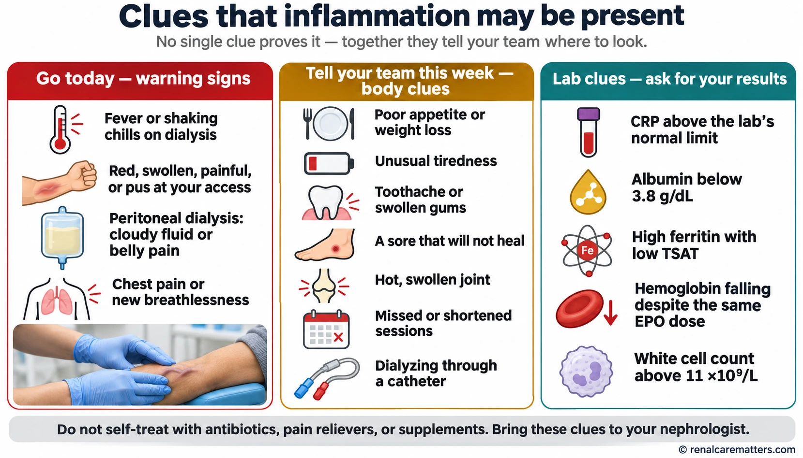
The same clues as the checker, on one page you can save: warning signs that need care today, body clues to tell your team this week, and laboratory clues to ask about.Ang parehong mga palatandaan ng pantingin, sa isang pahinang maitatago: mga babalang kailangan ng gamutan ngayon, mga palatandaan sa katawan na sasabihin sa team ngayong linggo, at mga laboratory na itatanong.Ang samang mga timailhan sa tigsusi, sa usa ka panid nga matipigan: mga pasidaan nga kinahanglan og tambal karon, mga timailhan sa lawas nga isulti sa team karong semanaha, ug mga laboratory nga pangutan-on.Deng pareung tanda ning pamanuri, king metung a pahinang malyaring itagu: reng babala a kailangan panggamut ngeni, reng tanda king katawan a sabyan me king team ngeni a dominggu, ampo reng laboratory a kutnan.
- CRP
- C-reactive protein (CRP)
- TSAT
- Transferrin saturation (TSAT)
- EPO
- Erythropoietin (EPO)
What helps now, and what is still being testedAng nakatutulong ngayon, at ang sinusubukan paUnsa ang makatabang karon, ug unsa ang gisulayan paNanu ing makatulung ngeni, at nanu ing subukan pa
The care that helps is mostly the care your unit already gives, done carefully: finding and treating infection early, protecting your access (and moving from a catheter to a fistula or graft when that is possible for you), getting the full prescribed time on dialysis, controlling fluid gain between sessions, eating enough protein and energy with your dietitian's guidance, staying physically active, and treating anemia and iron deficiency the way current kidney guidelines advise.Ang pangangalagang nakatutulong ay kadalasang ang mismong ibinibigay na ng inyong unit, ginagawa nang maingat: maagang paghanap at paggamot ng impeksyon, pag-iingat sa access (at paglipat mula catheter papuntang fistula o graft kung posible para sa inyo), pagkumpleto ng nireresetang oras ng dialysis, pagkontrol ng naiipong tubig sa pagitan ng mga sesyon, sapat na protina at enerhiya ayon sa payo ng dietitian, pananatiling aktibo, at paggamot ng anemia at kakulangan sa iron ayon sa kasalukuyang kidney guidelines.Ang pag-atiman nga makatabang kasagaran mao ang gihatag na sa inyong unit, gihimo nga mainampingon: sayo nga pagpangita ug pagtambal sa impeksyon, pag-amping sa access (ug pagbalhin gikan sa catheter ngadto sa fistula o graft kon posible alang kaninyo), pagkompleto sa gireseta nga oras sa dialysis, pagkontrol sa natigom nga tubig taliwala sa mga sesyon, igo nga protina ug enerhiya sumala sa tambag sa dietitian, pagpabilin nga aktibo, ug pagtambal sa anemia ug kakulang sa iron sumala sa karon nga kidney guidelines.Ing pamag-alaga a makatulung, kalupa na ning ibie na ning unit mu, gawan dapot maingat: maagang panintun at panggamut king impeksyun, pamag-ingat king access (at pamaglipat manibat catheter papunta king fistula o graft nung malyari keka), pamakumpletu king oras ning dialysis a meresetang, pamagkontrol king danum a mipun king pagitan dareng sesyun, sapat a protina at enerhiya agpang king payu ning dietitian, manatiling aktibu, at panggamut king anemia ampo king kakulangan king iron agpang kareng kasalungsungang kidney guidelines.
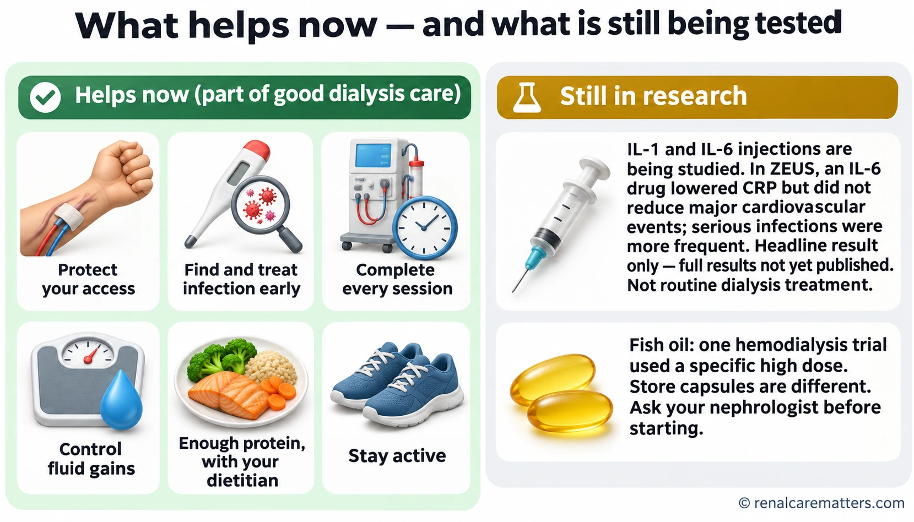
Everyday dialysis care that helps now, next to treatments still in research. The IL-6 trial result shown is a headline only; the full ZEUS results have not been published yet.Ang pang-araw-araw na pangangalaga sa dialysis na nakatutulong ngayon, katabi ng mga gamutang sinusuri pa. Headline lamang ang resulta ng IL-6 trial na ipinapakita; hindi pa nailalathala ang buong resulta ng ZEUS.Ang adlaw-adlaw nga pag-atiman sa dialysis nga makatabang karon, tupad sa mga pagtambal nga gisusi pa. Headline lang ang resulta sa IL-6 trial nga gipakita; wala pa mamantala ang tibuok resulta sa ZEUS.Ing aldo-aldo a pamag-alaga king dialysis a makatulung ngeni, katabi da reng panggamut a suriyan pa. Headline mu pamu ing resulta ning IL-6 trial a ipakit; e pa mepalwal ing buung resulta ning ZEUS.
- IL-6
- Interleukin-6 (IL-6)
- CRP
- C-reactive protein (CRP)
Newer injectable drugs that block IL-1 or IL-6 (two inflammation messengers) can lower CRP dramatically. That is not the same as preventing heart attacks or helping people feel better. In 2026, a large trial of one IL-6 blocker in people with kidney disease and heart disease (ZEUS) lowered inflammation markers but did not reduce heart attacks, strokes, or heart-related deaths, and serious infections were more common. A separate trial in people on dialysis (POSIBIL6ESKD) is still running and will report in a few years. These drugs are not routine treatment and are available only inside research studies.Ang mas bagong mga iniksyong gamot na humaharang sa IL-1 o IL-6 (dalawang mensahero ng pamamaga) ay nakapagpapababa nang malaki sa CRP. Hindi iyon katulad ng pagpigil sa atake sa puso o pagpapaginhawa sa pakiramdam. Noong 2026, isang malaking pag-aaral ng isang IL-6 blocker sa mga taong may sakit sa bato at sakit sa puso (ZEUS) ang nagpababa ng mga marker ng pamamaga ngunit hindi nagpababa ng atake sa puso, stroke, o pagkamatay dahil sa puso, at mas madalas ang malulubhang impeksyon. May hiwalay na pag-aaral sa mga nagda-dialysis (POSIBIL6ESKD) na nagpapatuloy pa at mag-uulat sa loob ng ilang taon. Hindi pa ito karaniwang gamot at makukuha lamang sa loob ng research studies.Ang mas bag-ong mga indeyksiyon nga tambal nga mobabag sa IL-1 o IL-6 (duha ka mensahero sa panghubag) makapaubos pag-ayo sa CRP. Dili kana pareho sa pagpugong sa atake sa kasingkasing o pagpaayo sa pamati. Niadtong 2026, usa ka dakong pagtuon sa usa ka IL-6 blocker sa mga tawo nga adunay sakit sa kidney ug sakit sa kasingkasing (ZEUS) ang nakapaubos sa mga marker sa panghubag pero wala makapaubos sa atake sa kasingkasing, stroke, o kamatayon tungod sa kasingkasing, ug mas kanunay ang grabeng impeksyon. Adunay lain nga pagtuon sa mga nag-dialysis (POSIBIL6ESKD) nga nagpadayon pa ug magreport sulod sa pipila ka tuig. Dili pa kini naandang tambal ug makuha lang sulod sa research studies.Deng bayung iniksiun a gamot a manarang king IL-1 o IL-6 (adwang mensahero ning pamamaga) makapababa lang masyadu king CRP. E ya iti kapareu ning pamigil king atake king puso o pamagumpaya king pamakiramdam. Kaniting 2026, metung a maragul a pamag-aral king metung a IL-6 blocker kareng tau a atin sakit king bato ampo sakit king puso (ZEUS) mepababa ne ing marker ning pamamaga dapot e na pepababa ing atake king puso, stroke, o pamikamate uli ning puso, at mas maralas ing malalam a impeksyun. Atin aliwang pamag-aral kareng magdialysis (POSIBIL6ESKD) a tuloy pa at mag-report kilub ning apat-limang banwa. E pa ya karaniwang gamot at akakwa mu pamu kilub dareng research studies.
The full ZEUS results have not been published yet. This guide will be updated once they are.Hindi pa nailalathala ang buong resulta ng ZEUS. Ia-update ang gabay na ito kapag nailathala na.Wala pa mamantala ang tibuok resulta sa ZEUS. I-update kini nga giya inig mamantala na.E pa mepalwal ing buung resulta ning ZEUS. I-update me ining giya nung mepalwal na.
Fish oil is a special case. A 2025 trial in people on hemodialysis (PISCES) found fewer serious heart and blood-vessel events with a specific daily dose: 4 grams of fish oil supplying 1.6 g of eicosapentaenoic acid (EPA) and 0.8 g of docosahexaenoic acid (DHA). That is far more than most store-bought capsules contain, and the benefit cannot be assumed for other products or doses. Fish oil can also interact with blood thinners. Talk with your nephrologist before starting any supplement.Espesyal na kaso ang fish oil. Natuklasan ng isang pag-aaral noong 2025 sa mga nagha-hemodialysis (PISCES) na mas kaunti ang malulubhang problema sa puso at ugat sa isang tiyak na araw-araw na dosis: 4 gramo ng fish oil na may 1.6 g na eicosapentaenoic acid (EPA) at 0.8 g na docosahexaenoic acid (DHA). Mas marami iyon kaysa sa laman ng karamihang kapsulang nabibili sa tindahan, at hindi maaaring ipalagay na pareho ang benepisyo sa ibang produkto o dosis. Maaari ring makipag-interaksyon ang fish oil sa mga pampalabnaw ng dugo. Kausapin ang inyong nephrologist bago magsimula ng anumang supplement.Espesyal nga kaso ang fish oil. Nakit-an sa usa ka pagtuon niadtong 2025 sa mga nag-hemodialysis (PISCES) nga mas gamay ang grabeng problema sa kasingkasing ug ugat sa usa ka piho nga adlaw-adlaw nga dosis: 4 ka gramo sa fish oil nga adunay 1.6 g nga eicosapentaenoic acid (EPA) ug 0.8 g nga docosahexaenoic acid (DHA). Mas daghan kana kaysa sulod sa kadaghanan sa kapsula nga mapalit sa tindahan, ug dili mahimong isipon nga pareho ang benepisyo sa ubang produkto o dosis. Mahimo usab nga makig-interaksyon ang fish oil sa mga pampanipis sa dugo. Pakigsulti sa inyong nephrologist una magsugod og bisan unsang supplement.Espesyal a kasu ing fish oil. Akit ning metung a pamag-aral kaniting 2025 kareng maghemodialysis (PISCES) a mas dikit ing malalam a problema king puso at ugat king metung a siguradung aldo-aldo a dosis: 4 a gramu ning fish oil a atin 1.6 g a eicosapentaenoic acid (EPA) at 0.8 g a docosahexaenoic acid (DHA). Mas dakal ya iti kesa king laman ning kalakwan a kapsulang asaliwan king tindahan, at ali malyaring isipan a pareu ing benepisyu king aliwang produktu o dosis. Malyari mu naman yang makipag-interaksyun ing fish oil kareng pampalabnaw dara. Makisabi ka king nephrologist mu bayu ka magumpisa ning anggang supplement.
Please do not self-treat a CRP numberHuwag gamutin nang mag-isa ang numero ng CRPAyaw tambali nga ikaw ra ang numero sa CRPE mu gamutan bukud ing numero ning CRP
Antibiotics, steroids, pain relievers such as ibuprofen, or herbal anti-inflammatories taken just to lower CRP can cause harm in kidney failure — bleeding, infection, high potassium, or loss of remaining kidney function. Bring the result to your nephrologist instead.Ang antibiotiko, steroid, pain reliever gaya ng ibuprofen, o herbal na anti-inflammatory na iniinom para lang ibaba ang CRP ay maaaring makasama sa kidney failure — pagdurugo, impeksyon, mataas na potassium, o pagkawala ng natitirang function ng bato. Dalhin na lang ang resulta sa inyong nephrologist.Ang antibiotiko, steroid, pain reliever sama sa ibuprofen, o herbal nga anti-inflammatory nga imnon aron lang ipaubos ang CRP mahimong makadaot sa kidney failure — pagdugo, impeksyon, taas nga potassium, o pagkawala sa nahabilin nga function sa kidney. Dad-a hinuon ang resulta sa inyong nephrologist.Ing antibiotiku, steroid, pain reliever kalupa ning ibuprofen, o herbal a anti-inflammatory a inuman pamu bang ibaba ing CRP malyaring makasakit king kidney failure — pamagdara, impeksyun, matas a potassium, o pamikawala ning mekeyaming function ning bato. Darun mu ne pamu ing resulta king nephrologist mu.
When to tell your team right awayKailan dapat sabihin agad sa inyong teamKanus-a dayon isulti sa inyong teamKapilan ing kailangan mung sabyan agad ing team mu
Seek care the same day forMagpatingin sa parehong araw kapag mayPagpatan-aw sa samang adlaw kon adunayMagpatingin king pareung aldo nung atin
Fever or shaking chills, especially during or after dialysis; redness, pus, swelling, or pain at the catheter, fistula, or graft; chest pain; new shortness of breath; confusion; or a sudden drop in blood pressure. In peritoneal dialysis (PD), cloudy drained fluid or belly pain needs a same-day call to your unit.Lagnat o matinding panginginig, lalo na habang o pagkatapos ng dialysis; pamumula, nana, pamamaga, o sakit sa catheter, fistula, o graft; pananakit ng dibdib; bagong hirap sa paghinga; pagkalito; o biglang pagbaba ng blood pressure. Sa peritoneal dialysis (PD), ang malabong lumabas na likido o sakit ng tiyan ay nangangailangan ng tawag sa unit sa parehong araw.Hilanat o grabeng pagkurog, labi na samtang o human sa dialysis; pagpula, nana, panghubag, o kasakit sa catheter, fistula, o graft; kasakit sa dughan; bag-ong kalisod sa pagginhawa; kalibog; o kalit nga pagkunhod sa blood pressure. Sa peritoneal dialysis (PD), ang lubog nga gawas nga likido o kasakit sa tiyan nagkinahanglan og tawag sa unit sa samang adlaw.Lagnat o masakit a panginginig, lalu na kabang o kaybat ning dialysis; pamamula, nana, pamamaga, o sakit king catheter, fistula, o graft; sakit ning salu; bayung kesakitan king pamanyawa; pamipalitu; o biglang pamababa ning blood pressure. King peritoneal dialysis (PD), ing malabung likidung miluwal o sakit ning atyan kailangan dang tawagan ing unit king pareung aldo.
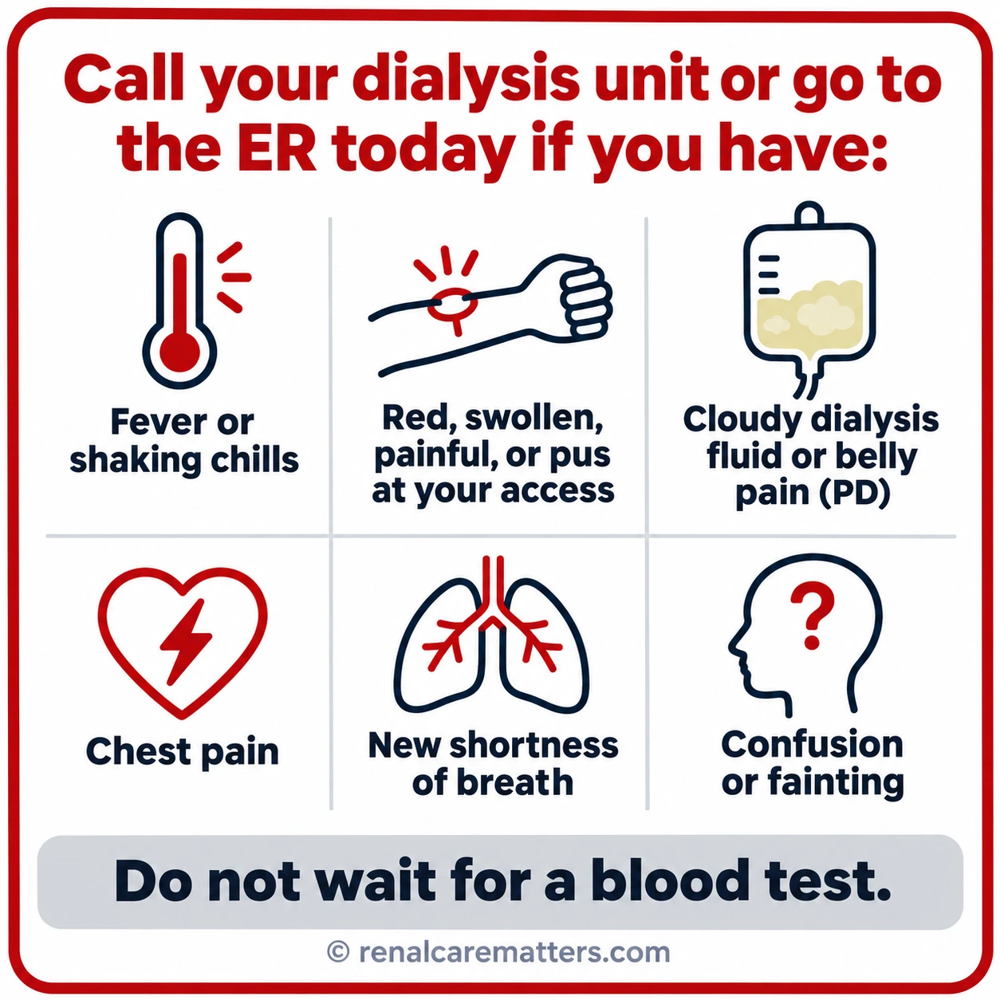
Save this card on your phone. Any of these signs means calling your dialysis unit or going to the emergency room today, without waiting for a blood test.Itago ang card na ito sa inyong telepono. Alinman sa mga palatandaang ito ay nangangahulugang tumawag sa dialysis unit o pumunta sa emergency room ngayon, nang hindi naghihintay ng blood test.Tipigi kini nga card sa inyong telepono. Bisan unsa niining mga timailhan nagpasabot nga tawagan ang dialysis unit o moadto sa emergency room karon, dili na maghulat sa blood test.Itagu me ining card king telepunu mu. Nanu man kareng tanda a reti kayulugan a tawagan me ing dialysis unit o munta ka king emergency room ngeni, e na antayan ing blood test.
- PD
- Peritoneal dialysis (PD)
Common questionsMga karaniwang tanongKasagarang mga pangutanaReng karaniwang kutang
Can targeting inflammation improve outcomes and symptoms on dialysis?
The short answer, as of November 2, 2026: inflammation is a real and prognostically powerful problem in kidney failure, but no anti-cytokine drug has yet improved a patient-important outcome in people receiving dialysis. What works today is the unglamorous work of finding the source, delivering adequate dialysis, protecting the access, treating anemia by current guidance, and asking patients what bothers them.
Read this first
Persistent inflammation is common in people on maintenance hemodialysis (HD) and peritoneal dialysis (PD), and higher interleukin-6 (IL-6) and C-reactive protein (CRP) concentrations are associated with cardiovascular and all-cause death in dialysis cohorts (Pecoits-Filho et al., 2002; Rao et al., 2005). Association is where the certainty ends. Those cohorts cannot separate inflammation as a cause of death from inflammation as a marker of the comorbidity, infection, malnutrition, and frailty that also kill dialysis patients.
Randomized evidence has now tested the causal idea directly. Blocking interleukin-1β (IL-1β) reduced recurrent cardiovascular events after myocardial infarction (MI) in a nondialysis population (Ridker et al., 2017), which made the hypothesis credible. In dialysis, every anti-cytokine trial to date has been a biomarker or pilot study: CRP and IL-6 fall, sometimes by 90%, while symptoms, nutrition, and events have not been shown to move (Chertow et al., 2024; Dember et al., 2022). The first large IL-6 outcomes trial in kidney disease, ZEUS, reported in July 2026 that ziltivekimab engaged its target yet produced no reduction in major adverse cardiovascular events (MACE), with more serious infections (Novo Nordisk, 2026). That result is a sponsor headline; the peer-reviewed report is pending.
The one recent direct-dialysis cardiovascular success came from a different direction. In PISCES, 1,228 maintenance-HD patients randomized to a defined fish-oil regimen had fewer serious cardiovascular events than those given corn-oil placebo (Lok et al., 2026). Fish oil has anti-inflammatory biology, but the trial did not show that inflammation reduction mediated the benefit, and the result belongs to that specific formulation and dose.
The editorial rule for this guide
Lowering a circulating inflammatory biomarker, improving a physiologic measure, correcting anemia, relieving a symptom, and preventing death or cardiovascular events are five different achievements. Each is judged separately, in the population actually studied. A positive phase 2 biomarker result does not predict a positive outcome trial, and ZEUS is the clearest recent proof.
What changed since earlier inflammation reviews
| Development | What it shows | Status at cut-off |
|---|---|---|
| Kidney Disease: Improving Global Outcomes (KDIGO) 2026 anemia guideline | Proactive intravenous (IV) iron preferred in HD; correct reversible causes before an erythropoiesis-stimulating agent (ESA); ESA rather than hypoxia-inducible factor prolyl hydroxylase inhibitor (HIF-PHI) as first line; upper hemoglobin below 11.5 g/dL during ESA maintenance | Final guideline (Hedayati et al., 2026) |
| PISCES | Fish oil (1.6 g eicosapentaenoic acid [EPA] + 0.8 g docosahexaenoic acid [DHA] daily) reduced serious cardiovascular events in maintenance HD | Peer-reviewed report (Lok et al., 2026); figures here checked against the abstract |
| ZEUS | IL-6 ligand blockade: target engagement without MACE benefit; more serious infections | Sponsor headline only; full results still to be published; guide will be updated (Novo Nordisk, 2026) |
| POSIBIL6ESKD | Clazakizumab phase 2b/3 in dialysis; phase 3 primary endpoint is cardiovascular death or MI | Recruiting; registry last updated September 2026 (U.S. National Library of Medicine, 2026b) |
| KDIGO 2027 medications focused update | Cardiorenal drug recommendations for CKD | Public-review draft only; excludes established dialysis kidney failure. Do not cite as final guidance. |
Scope, status, and limits
Adults on maintenance in-center HD are the core population, with a bounded PD section. Nondialysis chronic kidney disease (CKD) and general cardiology trials are labeled as indirect wherever they appear. This is a targeted evidence review with a research cut-off of November 2, 2026 (Asia/Manila), not a systematic review; most trial facts were checked against PubMed abstracts and official registry or sponsor records rather than full-text extraction. It is a clinician-reviewed teaching draft, not a practice guideline, and nothing here authorizes prescribing an investigational agent. The full ZEUS results are still to be published; this guide will be updated once they are.
What “inflammation” means in kidney failure, and where it comes from
Acute inflammation is a protective, self-limiting response: pattern-recognition receptors on macrophages and neutrophils detect microbial products or damaged tissue, cytokines recruit cells, the threat is cleared, and resolution mediators switch the program off. Kidney failure distorts every step. Retained solutes, oxidative stress, and endotoxin translocation keep innate immune cells primed; renal clearance of cytokines falls; and adaptive immunity weakens at the same time (Speer et al., 2022). The result is a paradox clinicians see daily — a patient who is both persistently inflamed and immunocompromised, with a high CRP and a poor vaccine response.
The mechanism most relevant to drug development runs through the NOD-like receptor pyrin domain-containing 3 (NLRP3) inflammasome. Danger signals such as cholesterol crystals, urate, or uremic toxins activate NLRP3, which cleaves pro-IL-1β into active IL-1β. IL-1β induces IL-6, and IL-6 signaling in hepatocytes drives CRP, fibrinogen, serum amyloid A, and hepcidin production (Speer et al., 2022; Tuttle et al., 2026). CRP therefore sits at the end of the chain. It is a convenient read-out, not the whole inflammatory state, and a circulating concentration says nothing direct about inflammation inside a coronary plaque or the myocardium.
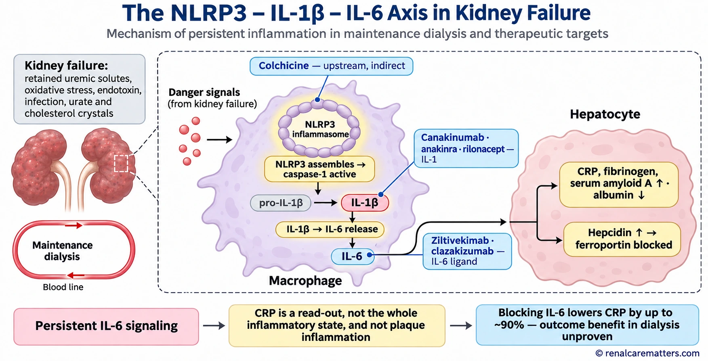
The NLRP3–IL-1β–IL-6 axis. CRP and hepcidin are downstream hepatic products of IL-6 signaling; drug targets are shown where each agent acts. CRP is a read-out of this pathway, not a measure of all inflammation.
- NLRP3
- NOD-like receptor pyrin domain-containing 3 (NLRP3)
- IL-1β
- Interleukin-1 beta (IL-1β)
- IL-6
- Interleukin-6 (IL-6)
- CRP
- C-reactive protein (CRP)
- ESA
- Erythropoiesis-stimulating agent (ESA)
Sources: what can be found and fixed
Before any biology of uremia is invoked, a persistently elevated CRP in a dialysis patient is an instruction to look for a source. The contributors below differ in how often they occur and how firmly they are linked to inflammation, but each has a concrete assessment and an owner on the dialysis team. Modern water treatment and ultrapure dialysate have made circuit-derived inflammation less prominent than it was historically; an individual patient's high CRP is never, by itself, evidence that a unit's water is contaminated.
| Contributor | Clues | First assessment | Action and owner |
|---|---|---|---|
| Access infection (catheter, arteriovenous [AV] fistula or graft) | Fever or rigors on dialysis, exit-site erythema or pus, tunnel tenderness | Examination; paired blood cultures before antibiotics when stable | Infection pathway, source control; nephrologist, access nurse (Centers for Disease Control and Prevention [CDC], 2024) |
| Tunneled catheter in place | Long catheter dependence, failed maturation | Access plan review | Individualized end-stage kidney disease (ESKD) life-plan, catheter reduction where feasible; vascular access team |
| Thrombosed or abandoned graft | Old nonfunctioning graft, unexplained persistent CRP | Examination, imaging if indicated | Surgical or radiology opinion |
| Nonaccess infection | Dental, diabetic foot, skin, lung, native urinary tract, tuberculosis (TB) risk | History and examination directed by symptoms | Relevant specialty pathway |
| Inadequate dialysis delivery | Shortened or missed sessions, falling delivered dose | Treatment-time and adequacy review | Prescription and adherence plan; nephrologist, charge nurse |
| Volume overload | High interdialytic weight gain, edema, hypertension | Clinical volume assessment | Dry-weight and sodium plan |
| Protein-energy wasting (PEW) | Falling appetite, weight, muscle, or albumin | Dietitian assessment (Ikizler et al., 2020) | Individualized nutrition plan |
| Comorbid inflammatory disease | Gout, autoimmune disease, liver disease, malignancy | Directed history and testing | Disease-specific management |
| Water and dialysate quality | Clusters of pyrogenic reactions across patients | Unit-level surveillance records | Facility quality program, not individual CRP |
What changes practice
Treat a persistently raised CRP as a prompt for a directed source search, not as a diagnosis and not as a drug target. Most of the actions in the table carry benefits of their own that do not depend on CRP falling.
Measuring inflammation without over-reading it
High-sensitivity CRP (hsCRP) assays measure the low concentrations that matter in cardiovascular risk research; standard CRP assays are built for acute infection. Units differ between laboratories, and the conversion is simple but often missed: CRP in mg/dL × 10 = mg/L. A single value reflects the previous few days, so a dental abscess, a cannulation-site infection, or a viral illness can produce a misleading spike. When a measurement will change management, repeat it after intercurrent illness has settled and interpret it alongside the clinical story.
The threshold of hsCRP ≥2 mg/L that recurs in this literature is a trial enrichment criterion used by CANTOS, RESCUE, ZEUS, and the clazakizumab program. It identifies people in whom an anti-inflammatory drug has room to work. It is not a clinical definition of disease and does not, by itself, create an indication for any therapy. No guideline currently recommends routine hsCRP screening of every dialysis patient or a treat-to-CRP strategy.
| Marker | What it can suggest | What it cannot establish | Main confounders |
|---|---|---|---|
| CRP / hsCRP | Active or persistent IL-6–driven hepatic response; prognosis at group level | Site of inflammation; plaque or myocardial inflammation; need for immunomodulation | Intercurrent infection, assay and unit differences, liver disease |
| IL-6 | Upstream cytokine activity; strong prognostic association in HD cohorts (Rao et al., 2005) | Treatment indication; not standardized for routine care | Assay variability, timing relative to dialysis, limited availability |
| Serum albumin | Combined signal of inflammation, nutrition, volume, and losses | Nutritional status on its own | Hemodilution, PD protein losses, liver disease, acute illness |
| Ferritin | Iron stores when not inflamed | Usable iron during inflammation (ferritin is an acute-phase reactant) | Inflammation, liver disease, recent IV iron |
| Transferrin saturation (TSAT) | Iron available for erythropoiesis | Iron stores | Diurnal variation, recent iron dosing |
| Hemoglobin and ESA dose trajectory | Hyporesponsiveness when ESA needs rise without explanation | Cause of the hyporesponsiveness | Bleeding, hemolysis, hyperparathyroidism, inadequate dialysis, drug effects |
Ferritin deserves particular care. Because ferritin rises as an acute-phase protein, a ferritin of several hundred ng/mL with a low TSAT can coexist with functional iron restriction. Albumin is similar: Kidney Disease Outcomes Quality Initiative (KDOQI) nutrition guidance treats it as one input among several in nutritional assessment, not a stand-alone diagnosis (Ikizler et al., 2020).
Outcomes, anemia, and symptoms: an endpoint taxonomy
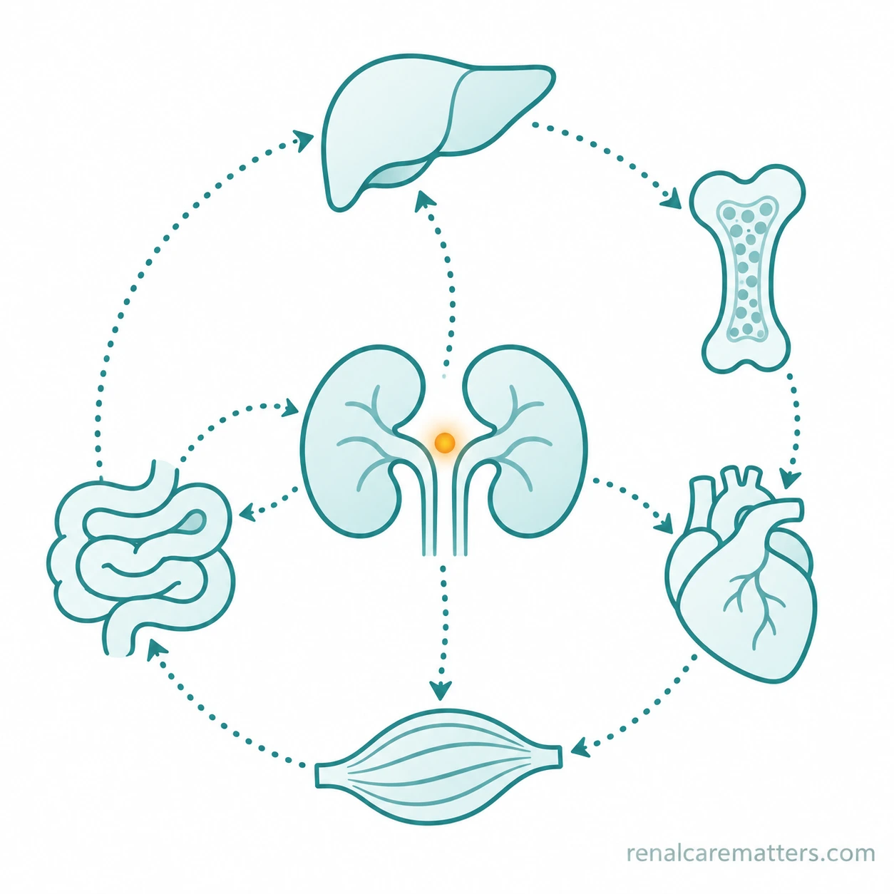
Inflammation in kidney failure is a multi-organ conversation: gut-derived endotoxin, the hepatic acute-phase response, iron restriction in the marrow, and cardiovascular and muscle effects, not a single laboratory number.
“Cardiovascular benefit” is not one thing in dialysis. A large share of cardiovascular death in this population is sudden death, heart failure, and arrhythmia driven by left ventricular hypertrophy, fibrosis, volume and electrolyte shifts, and vascular calcification — processes only partly mediated by atherosclerotic plaque. An anti-inflammatory drug designed around atherothrombosis may therefore have less to work on in dialysis than in a post-MI population, even if the biology is shared. This is one reason trial results from CANTOS cannot be transplanted to dialysis, and why the POSIBIL6ESKD phase 3 endpoint (cardiovascular death or MI) differs from the 3-point MACE used in ZEUS.
The anemia link is the clearest mechanistic connection in the field. IL-6 induces hepatic hepcidin; hepcidin degrades ferroportin, trapping iron in enterocytes and macrophages; erythropoiesis becomes iron-restricted even when ferritin is high; and ESA requirements rise (Pergola et al., 2021). Anemia in kidney failure is still multifactorial, so the KDIGO 2026 guideline asks clinicians to address correctable causes, including iron deficiency, infection, and inflammation, before starting an ESA or HIF-PHI (Hedayati et al., 2026). Bleeding, inadequate dialysis, and high parathyroid hormone (PTH) levels compete with inflammation as explanations for a rising ESA requirement.
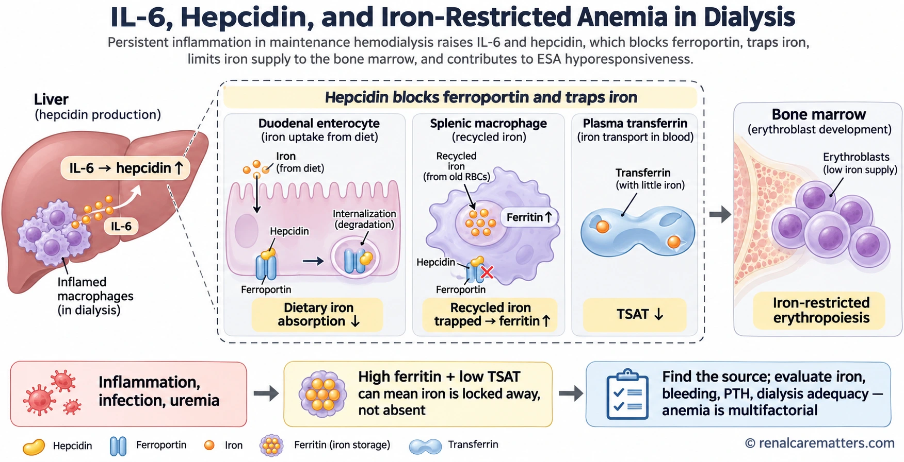
IL-6 raises hepatic hepcidin, which internalizes ferroportin on duodenal enterocytes and splenic macrophages. Iron absorption falls, recycled iron is trapped in ferritin, TSAT drops, and erythropoiesis becomes iron-restricted, so high ferritin with low TSAT can mean iron is locked away rather than absent.
- IL-6
- Interleukin-6 (IL-6)
- TSAT
- Transferrin saturation (TSAT)
- ESA
- Erythropoiesis-stimulating agent (ESA)
- PTH
- Parathyroid hormone (PTH)
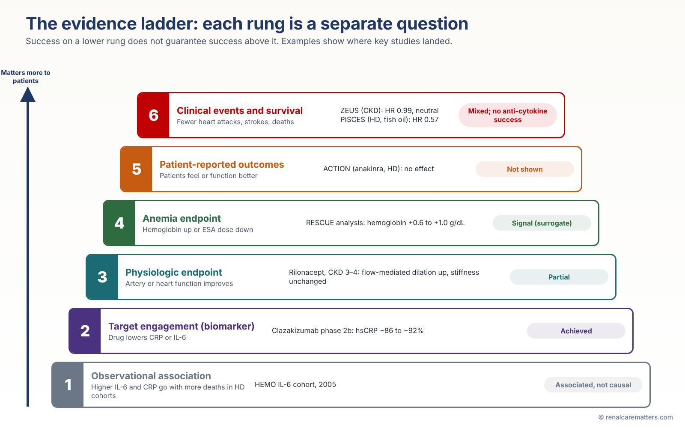
The evidence ladder used throughout this guide. Each rung is a separate question; success on a lower rung does not guarantee success higher up. Examples show where key studies actually landed.
- HD
- Hemodialysis (HD)
- hsCRP
- High-sensitivity C-reactive protein (hsCRP)
- MACE
- Major adverse cardiovascular events (MACE)
Read the ladder from the bottom. Observational cohorts tie IL-6 to death (Rao et al., 2005). Pilot and phase 2 trials show target engagement. The rilonacept study in stage 3–4 CKD improved brachial flow-mediated dilation (FMD) without changing aortic pulse-wave velocity (Nowak et al., 2017), a physiologic signal. RESCUE raised hemoglobin by roughly 0.6–1.0 g/dL in an exploratory analysis (Pergola et al., 2024), an anemia signal. ACTION found no patient-reported outcome (PRO) benefit (Dember et al., 2022). At the top rung, CANTOS succeeded outside dialysis, ZEUS failed in CKD, and PISCES succeeded in HD with an agent whose mechanism of benefit is unknown.
Confounding and reverse causation
A sicker patient generates more inflammation; inflammation also makes patients sicker. Cohort adjustment cannot fully separate the two, and it cannot remove the confounding from infection that is both a source of CRP and an independent cause of death. Randomized trials that lower a marker are the only way to test whether the marker is on the causal path, which is why the outcome trials in the next sections matter more than any hazard ratio from a cohort.
IL-1 blockade: proof of concept, and its limits
CANTOS — the trial that made the hypothesis credible (indirect evidence)
The Canakinumab Anti-inflammatory Thrombosis Outcomes Study (CANTOS) randomized 10,061 patients with prior MI and hsCRP ≥2 mg/L to placebo or one of three doses of canakinumab, a monoclonal antibody against IL-1β, given every 3 months. Over a median 3.7 years, the 150-mg dose reduced the primary composite of nonfatal MI, nonfatal stroke, or cardiovascular death (hazard ratio [HR] 0.85, 95% confidence interval [CI] 0.74–0.98), with event rates of 3.86 versus 4.50 per 100 person-years. Lipids did not change. Fatal infections were more frequent with canakinumab, and all-cause mortality did not differ (HR 0.94, 95% CI 0.83–1.06) (Ridker et al., 2017).
A secondary analysis examined the 1,875 participants (18.6%) with an estimated glomerular filtration rate (eGFR) below 60 mL/min/1.73 m². MACE fell with randomized canakinumab (HR 0.82, 95% CI 0.68–1.00), and the effect was larger in those whose on-treatment hsCRP fell below 2 mg/L after the first dose (HR 0.68) (Ridker et al., 2018). Two cautions apply. These patients had moderate CKD, not kidney failure on dialysis. And the “responder” comparison is a post-randomization subgroup: people who achieve a low CRP on treatment differ in many ways from those who do not, so the analysis cannot validate a strategy of titrating therapy to a CRP target.
Direct dialysis and CKD studies
The first randomized IL-1 study in maintenance HD enrolled patients with three consecutive hsCRP values above 5 mg/L and gave recombinant human IL-1 receptor antagonist (IL-1ra) or placebo for 4 weeks. Of 22 randomized, 14 completed. Mean hsCRP fell 53% versus 1% and IL-6 fell 40% versus a 20% rise; the prealbumin difference was not significant (Hung et al., 2011). The agent was recombinant IL-1ra, the molecule marketed as anakinra; a photographed lecture slide that labeled this pilot as rilonacept appears to be mistaken.
Rilonacept, an IL-1 trap, was tested in 42 adults with stage 3–4 CKD who were not on dialysis. After 12 weeks it improved brachial FMD and lowered hsCRP but did not change aortic pulse-wave velocity (Nowak et al., 2017). That is a physiologic signal in a nondialysis population.
ACTION was the definitive pilot in dialysis. Eighty HD patients with hsCRP ≥2 mg/L received anakinra 100 mg three times weekly through the dialysis circuit, or placebo, for 24 weeks. Median hsCRP fell 41% with anakinra and 6% with placebo, a between-group difference that was not statistically significant; IL-6 fell significantly (25% vs. 0%). No effect on patient-reported outcomes was evident. Serious adverse events and deaths were similar, and the rate of prespecified adverse events of interest, including infections and cytopenias, was lower with anakinra (0.48 vs. 1.40 events per patient-year). Retention was 80% and 72% of doses were given (Dember et al., 2022). A 24-week pilot cannot establish long-term infection safety, but ACTION does show that an IL-1 trial in dialysis is feasible.
Reading ACTION correctly
ACTION was not positive on its primary hsCRP comparison and showed no symptom benefit. It is often cited as “anakinra lowers inflammation in dialysis”; the accurate summary is that IL-6 fell, hsCRP did not differ significantly from placebo, and patients did not feel different.
IL-6 blockade: target engagement versus benefit
IL-6 sits one step closer to the liver than IL-1β, which makes it the more direct handle on CRP and hepcidin. Two agents dominate the kidney literature, both monoclonal antibodies against the IL-6 ligand rather than the receptor: ziltivekimab and clazakizumab. Receptor blockers such as tocilizumab belong to rheumatology and carry their own safety data; infection or cytopenia rates from one agent should not be transferred to another.
Ziltivekimab in selected HD patients with anemia of inflammation
A phase 1/2 trial randomized 61 HD patients with IL-6 ≥4 pg/mL who carried the rs855791 variant of TMPRSS6, a polymorphism hypothesized to heighten IL-6–mediated effects on iron. Intravenous ziltivekimab every 2 weeks for 12 weeks lowered hsCRP, serum amyloid A, and fibrinogen; median ESA use fell by 15,000 to 33,000 international units (IU) per week across dose cohorts with no change on placebo; and TSAT, serum iron, and albumin rose. Four patients in the two higher-dose cohorts died of treatment-emergent adverse events (Pergola et al., 2021). In a trial this small and this selected, those deaths can neither be dismissed nor attributed to the drug. The anemia findings are biologically coherent and remain surrogate outcomes.
RESCUE (indirect: nondialysis CKD)
RESCUE randomized 264 adults with moderate-to-severe CKD and hsCRP ≥2 mg/L to subcutaneous ziltivekimab 7.5, 15, or 30 mg or placebo every 4 weeks. At 12 weeks median hsCRP fell 77%, 88%, and 92% versus 4% with placebo, with reductions in fibrinogen, serum amyloid A, and lipoprotein(a); the drug was well tolerated over 24 weeks (Ridker et al., 2021). An exploratory analysis of the same participants reported hemoglobin increases of 0.57 to 1.05 g/dL versus placebo at 12 weeks, with higher serum iron and TSAT; the trial ended early because of the coronavirus disease 2019 (COVID-19) pandemic (Pergola et al., 2024). These are two reports from one randomized population, not two trials, and both concern biomarkers.
Clazakizumab phase 2b in maintenance dialysis (direct)
The dose-finding stage of POSIBIL6ESKD randomized 127 adults on maintenance dialysis with cardiovascular disease and/or diabetes and hsCRP ≥2 mg/L to clazakizumab 2.5, 5, or 10 mg or placebo every 4 weeks. At week 12, hsCRP fell by 86%, 90%, and 92% relative to placebo; 79–82% of treated patients reached hsCRP below 2 mg/L versus none on placebo; and fibrinogen, serum amyloid A, and lipoprotein(a) fell while albumin rose. No sustained grade 3–4 neutropenia or thrombocytopenia occurred. Serious infections were similar to placebo at 2.5 and 5 mg but numerically more frequent at 10 mg (Chertow et al., 2024). This is the strongest direct evidence of IL-6 target engagement in dialysis, and it is still a biomarker trial.
ZEUS teaching box — sponsor headline; full results not yet published
ZEUS randomized more than 6,300 people with atherosclerotic cardiovascular disease, CKD, and hsCRP ≥2 mg/L to ziltivekimab 15 mg or placebo once monthly on top of standard care. On July 31, 2026, the sponsor reported that free IL-6 and hsCRP fell as expected but the primary 3-point MACE endpoint (cardiovascular death, nonfatal MI, nonfatal stroke) was unchanged: HR 0.99, 95% CI 0.88–1.11. Overall adverse event rates were similar, a higher proportion of treated participants had serious infections, and all-cause mortality did not differ (Novo Nordisk, 2026). The registry lists actual enrollment of 6,385 and status completed (U.S. National Library of Medicine, 2026a), while a sponsor investor presentation cited 6,376. Absolute infection rates, subgroup results, and the dialysis-specific contribution, if any, are not yet public. The full ZEUS results are still to be published; this section will be updated once the peer-reviewed report is available.
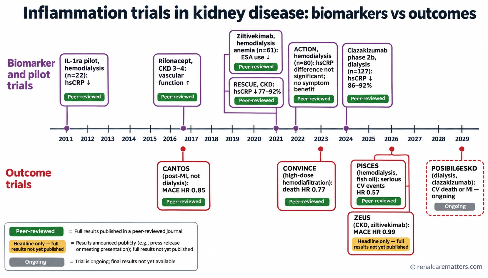
Biomarker and pilot trials (upper lane) consistently lowered inflammatory markers; outcome trials (lower lane) tell a different story. ZEUS is a sponsor headline whose full results are still to be published; POSIBIL6ESKD is ongoing.
- hsCRP
- High-sensitivity C-reactive protein (hsCRP)
- MACE
- Major adverse cardiovascular events (MACE)
- MI
- Myocardial infarction (MI)
- HR
- Hazard ratio (HR)
- ESA
- Erythropoiesis-stimulating agent (ESA)
How to interpret ZEUS
ZEUS tested the biomarker hypothesis about as fairly as it can be tested: a validated target, a population enriched for inflammation, an adequately powered event-driven design, and confirmed engagement. The result does not prove that inflammation is irrelevant to cardiovascular disease in CKD. It does show that lowering circulating IL-6 activity, in that population and over that time frame, did not translate into fewer atherothrombotic events, and that the infection cost was real. Several explanations remain open: the dominant cardiovascular mechanisms in advanced CKD may be nonatherosclerotic; tissue inflammation may not track circulating IL-6; competing risks may dilute benefit; and infection harm may offset any vascular gain. ZEUS was not a maintenance-dialysis trial, so it neither confirms nor refutes what POSIBIL6ESKD will find, but it removes any basis for assuming that a 90% hsCRP reduction predicts benefit.
POSIBIL6ESKD continues. The registry lists combined estimated enrollment of 3,110, estimated completion on May 22, 2029, and a phase 3 primary endpoint of time to cardiovascular death or MI (U.S. National Library of Medicine, 2026b). A trial operations page has listed different sample-size and timeline figures; until the sponsor reconciles them, quote the registry with its date. Registration is not evidence of efficacy.
Other strategies and the 2025–2026 outcome update
PISCES: fish oil in maintenance hemodialysis (direct)
PISCES randomized 1,228 adults on maintenance HD at 26 sites in Canada and Australia to daily fish oil — 4 g providing 1.6 g EPA and 0.8 g DHA — or corn-oil placebo, double-blind. The primary endpoint counted all serious cardiovascular events: sudden and nonsudden cardiac death, fatal and nonfatal MI, peripheral vascular disease leading to amputation, and fatal and nonfatal stroke. Over 3.5 years the event rate was 0.31 versus 0.61 per 1,000 patient-days (HR 0.57, 95% CI 0.47–0.70). Component HRs pointed the same way (cardiac death 0.55, MI 0.56, amputation 0.57, stroke 0.37), the extended endpoint including noncardiac death had an HR of 0.77, and adverse events and adherence did not differ meaningfully (Lok et al., 2026).
Three points of interpretation matter at the bedside. First, the primary result is expressed as an event rate across follow-up, so it should not be converted into a number needed to treat from the HR; the absolute risk of a first event, and the exact estimand, need the full text. Second, the benefit belongs to that product and dose. Typical over-the-counter fish-oil capsules contain far less EPA plus DHA per capsule, purity varies, and pure-EPA products are a different intervention. Third, fish oil has anti-inflammatory, antiarrhythmic, antiplatelet, and triglyceride-lowering effects, and PISCES did not show which of these, if any, produced the result. Calling it an anti-inflammatory success would be an overreach. Whether guideline bodies adopt it, and how it fits with bleeding risk on anticoagulants or antiplatelet therapy, is still to be settled; for now it supports an individualized conversation, with the trial regimen named precisely.
Colchicine and methotrexate: contrasts from cardiology (indirect)
Three nondialysis trials show how unpredictable anti-inflammatory strategies are. Low-dose methotrexate in stable atherosclerosis did not lower IL-1β, IL-6, or CRP and did not reduce events (HR 0.96, 95% CI 0.79–1.16) (Ridker et al., 2019). Colchicine 0.5 mg daily in chronic coronary disease (LoDoCo2) reduced the primary composite (HR 0.69, 95% CI 0.57–0.83), with a borderline excess of noncardiovascular death (HR 1.51, 95% CI 0.99–2.31) (Nidorf et al., 2020). Colchicine started soon after MI in CLEAR SYNERGY lowered CRP but did not reduce events (HR 0.99, 95% CI 0.85–1.16) (Jolly et al., 2025).
None of these trials studied dialysis. Colchicine is renally cleared, narrow in therapeutic index, and interacts with strong cytochrome P450 3A4 (CYP3A4) and P-glycoprotein (P-gp) inhibitors; the United States label for the cardiovascular product LODOCO contraindicates it when creatinine clearance is below 15 mL/min (AGEPHA Pharma USA, 2023). That labeling applies to the cardiovascular product and indication; colchicine use for gout flares in kidney failure is a separate decision with its own dosing and toxicity considerations. This guide does not support a dialysis cardiovascular colchicine regimen.
Dialysis modality: high-volume hemodiafiltration
CONVINCE randomized 1,360 patients already on high-flux HD who were candidates for a convection volume of at least 23 L per session and able to complete patient-reported outcome assessments. High-dose hemodiafiltration (HDF; mean 25.3 L per session) reduced all-cause death compared with high-flux HD over a median of 30 months (17.3% vs. 21.9%; HR 0.77, 95% CI 0.65–0.93) (Blankestijn et al., 2023). Better middle-molecule clearance and lower inflammation are plausible mediators, but the trial did not establish the mechanism, and the result applies to patients with access and hemodynamics able to deliver that volume, in units with the water quality and equipment to support it.
Nutrition, exercise, and other interventions
Nutrition support, exercise programs, probiotics, antioxidants, and expanded-hemodialysis membranes have all been studied with inflammatory markers as endpoints, mostly in small trials. Nutrition and physical activity are worth doing for function, appetite, and quality of life on their own terms (Ikizler et al., 2020); claims that they work by lowering CRP, or that they reduce mortality through that route, are not supported by adequately powered outcome trials. Small studies of surrogate markers should not receive the same weight as PISCES or CONVINCE.
Master trial matrix and benefit–harm ledger
Each row reports the prespecified primary result first. The directness column labels whether the population was maintenance dialysis (direct), nondialysis CKD, or a nonrenal population. The source column shows how the figures here were checked: an abstract verified on PubMed, a peer-reviewed full report, a sponsor headline, or a registry record.
| Study | Population (N) | Intervention | Primary endpoint and result | Harms signal | Directness | Source checked |
|---|---|---|---|---|---|---|
| CANTOS, 2017 | Prior MI, hsCRP ≥2 mg/L (10,061) | Canakinumab every 3 months | 3-point MACE: HR 0.85 (0.74–0.98) at 150 mg | More fatal infections | Nonrenal | Abstract |
| CANTOS CKD analysis, 2018 | eGFR <60 subgroup (1,875) | As above | MACE HR 0.82 (0.68–1.00) | No renal harm reported | Nondialysis CKD (subgroup) | Abstract |
| Hung, 2011 | HD, hsCRP >5 mg/L ×3 (22; 14 completed) | Recombinant IL-1ra, 4 weeks | hsCRP −53% vs. −1% | Too small to judge | Direct | Abstract |
| Nowak, 2017 | CKD stage 3–4 (42) | Rilonacept, 12 weeks | FMD improved; aortic pulse-wave velocity unchanged | Few events | Nondialysis CKD | Abstract |
| ACTION, 2022 | HD, hsCRP ≥2 mg/L (80) | Anakinra 100 mg three times weekly, 24 weeks | hsCRP −41% vs. −6%, not significant; no PRO effect | No excess infection or cytopenia | Direct | Abstract |
| Pergola, 2021 | HD, IL-6 ≥4 pg/mL, TMPRSS6 variant (61) | IV ziltivekimab, 12 weeks | Safety and biomarkers; ESA use fell | 4 deaths (6- and 20-mg cohorts) | Direct, selected | Abstract |
| RESCUE, 2021 | CKD 3–5, hsCRP ≥2 mg/L (264) | Ziltivekimab every 4 weeks | hsCRP −77 to −92% vs. −4% | Well tolerated over 24 weeks | Nondialysis CKD | Abstract |
| Clazakizumab phase 2b, 2024 | Dialysis + cardiovascular disease (CVD) and/or diabetes, hsCRP ≥2 mg/L (127) | Clazakizumab every 4 weeks | hsCRP −86 to −92% vs. placebo | Serious infections numerically higher at 10 mg | Direct | Abstract |
| ZEUS, 2026 | ASCVD + CKD, hsCRP ≥2 mg/L (>6,300) | Ziltivekimab 15 mg monthly | 3-point MACE: HR 0.99 (0.88–1.11) | More serious infections | Nondialysis CKD | Sponsor headline |
| PISCES, 2026 | Maintenance HD (1,228) | Fish oil, 1.6 g EPA + 0.8 g DHA daily | Serious CV events: HR 0.57 (0.47–0.70) | Adverse events similar | Direct | Abstract |
| CONVINCE, 2023 | HD, able to reach ≥23 L convection (1,360) | High-dose HDF | All-cause death: HR 0.77 (0.65–0.93) | — | Direct, selected | Abstract |
| CIRT, 2019 | Stable atherosclerosis + diabetes or metabolic syndrome (4,786) | Low-dose methotrexate | No CRP change; HR 0.96 (0.79–1.16) | Liver enzymes, cytopenias, skin cancer | Nonrenal | Abstract |
| LoDoCo2, 2020 | Chronic coronary disease (5,522) | Colchicine 0.5 mg daily | Composite: HR 0.69 (0.57–0.83) | Noncardiovascular death HR 1.51 (0.99–2.31) | Nonrenal | Abstract |
| CLEAR SYNERGY, 2025 | Acute MI (7,062) | Colchicine | Composite: HR 0.99 (0.85–1.16) | More diarrhea | Nonrenal | Abstract |
Study regimens are listed to identify the intervention tested; they are not prescribing guidance. Confidence intervals are 95%. CV = cardiovascular; CVD = cardiovascular disease.
Benefit–harm ledger for anti-cytokine therapy in dialysis
| Question | Current answer | Certainty |
|---|---|---|
| Does IL-1 or IL-6 blockade lower CRP and IL-6 in dialysis? | Yes for IL-6 ligand antibodies; inconsistent for anakinra on hsCRP | Moderate (small randomized trials) |
| Does it improve anemia markers? | Suggested by small or exploratory analyses | Low |
| Does it improve symptoms or function? | Not shown; ACTION found no PRO effect | Low |
| Does it reduce cardiovascular events or death in dialysis? | Unknown; no completed dialysis outcome trial. The CKD outcome trial (ZEUS) was neutral | No direct evidence |
| Does it increase serious infection? | Signals in CANTOS, ZEUS, and the highest clazakizumab dose; not seen in short anakinra pilots | Moderate for the class concern; agent-specific rates pending |
A practical pathway for the inflamed dialysis patient
The entry point is a clinical concern: persistent unexplained elevation of CRP, ESA hyporesponsiveness, deteriorating nutrition, or burdensome symptoms. A screening CRP is not required for every patient, and nothing in the pathway below leads to an anti-cytokine prescription.
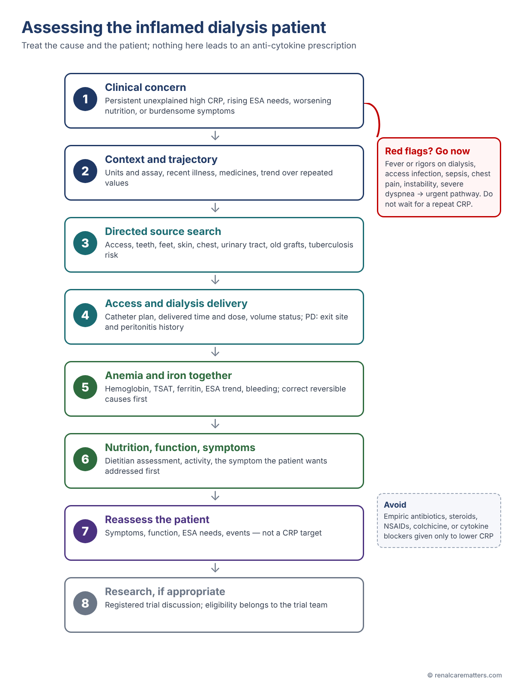
Clinical assessment pathway for suspected persistent inflammation in a dialysis patient. Urgent problems exit to the appropriate emergency pathway first; the remaining steps address treatable causes; reassessment is based on the patient's condition and symptoms rather than a CRP target.
- CRP
- C-reactive protein (CRP)
- ESA
- Erythropoiesis-stimulating agent (ESA)
- TSAT
- Transferrin saturation (TSAT)
- PD
- Peritoneal dialysis (PD)
Established care with outcome evidence in dialysis
Two dialysis trials justify specific actions that sit alongside inflammation management, without implying that cytokine suppression explains their benefit. PIVOTAL randomized 2,141 HD patients to proactive high-dose IV iron sucrose (400 mg monthly unless ferritin exceeded 700 µg/L or TSAT reached 40%) or a reactive low-dose strategy. The proactive arm was noninferior and superior on the composite of nonfatal MI, nonfatal stroke, heart-failure hospitalization, or death (HR 0.85, 95% CI 0.73–1.00), used less ESA, and had the same infection rate (Macdougall et al., 2019). It supports the KDIGO 2026 preference for proactive IV iron in HD; it is not a license to give iron during active infection. CONVINCE supports high-volume HDF where feasible (Blankestijn et al., 2023).
What not to do
Do not start empiric antibiotics, glucocorticoids, nonsteroidal anti-inflammatory drugs (NSAIDs), colchicine, or cytokine blockers to normalize a CRP value. Do not transfer nondialysis cardiorenal regimens — sodium-glucose cotransporter 2 (SGLT2) inhibitors, glucagon-like peptide-1 (GLP-1) receptor agonists, or mineralocorticoid receptor antagonists — into dialysis as an “anti-inflammatory bundle.” Their kidney and cardiovascular evidence comes largely from CKD not on dialysis (KDIGO CKD Work Group, 2024), and each needs its own dialysis-specific indication.
Symptoms and patient-important outcomes
Fatigue, post-dialysis recovery time, pruritus, poor sleep, low appetite, pain, low mood, and declining physical function are what dialysis patients report most often and want addressed. The 2022 KDIGO Controversies Conference on symptom-based complications concluded that symptom assessment should be routine and individualized and that dialysis care has focused too narrowly on laboratory targets (Mehrotra et al., 2023). That report is consensus, not a graded guideline.
Inflammation may contribute to several of these symptoms through cytokine effects on the brain, muscle, and appetite, but ACTION is the instructive counterexample: a drug that lowered IL-6 did not make patients feel better (Dember et al., 2022). Symptom relief should never be made contingent on lowering CRP. Difelikefalin, a peripherally restricted kappa-opioid agonist, illustrates the alternative: in KALM-1 (378 HD patients), 49.1% versus 27.9% achieved at least a 3-point improvement on the Worst Itch Numerical Rating Scale (WI-NRS) at 12 weeks (Fishbane et al., 2020). That is symptom-specific benefit, not evidence for systemic anti-cytokine therapy; check local registration and availability before discussing it.
| Domain | Assessment option | Common competing contributors | First steps |
|---|---|---|---|
| Fatigue and recovery time | Ask recovery time after dialysis; a fatigue measure such as the Standardized Outcomes in Nephrology–Hemodialysis (SONG-HD) fatigue item | Anemia, depression, sleep disorders, intradialytic hypotension, excessive ultrafiltration, deconditioning | Review ultrafiltration and blood pressure, anemia, mood, and sleep; graded activity |
| Pruritus | WI-NRS | Dry skin, hyperphosphatemia, hyperparathyroidism, inadequate dialysis, drug reactions | Emollients, mineral-bone review, adequacy; specific antipruritic therapy |
| Appetite and weight loss | Dietitian assessment; Subjective Global Assessment | Underdialysis, gastroparesis, depression, dental disease, infection | Nutrition plan, source search (Ikizler et al., 2020) |
| Mood | Validated depression screen with a referral route | Social stressors, pain, insomnia | Psychosocial and psychiatric care |
| Pain | Numeric rating and location | Access, neuropathy, bone disease, musculoskeletal | Cause-directed treatment; avoid NSAIDs |
| Overall burden | Dialysis Symptom Index or a Kidney Disease Quality of Life (KDQOL) instrument | Multiple | Ask which symptom the patient wants addressed first |
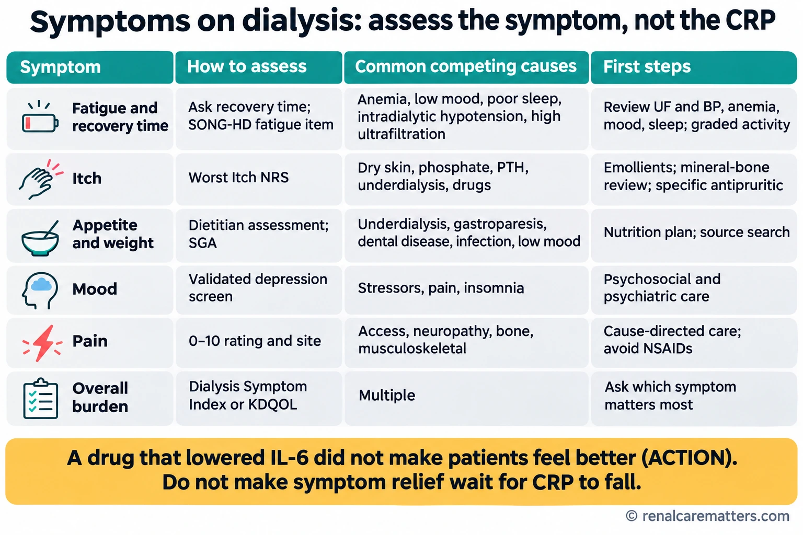
Quick-look version of the symptom table: assess each symptom on its own terms, look for competing causes, and treat without waiting for CRP to fall.
- SONG-HD
- Standardized Outcomes in Nephrology–Hemodialysis (SONG-HD)
- KDQOL
- Kidney Disease Quality of Life (KDQOL)
- NSAIDs
- Nonsteroidal anti-inflammatory drugs (NSAIDs)
- PTH
- Parathyroid hormone (PTH)
Check instrument wording, licensing, and validated cut-offs before adopting any tool unit-wide. Acute or severe symptoms, such as chest pain, syncope, new neurologic deficits, or suicidal thoughts, have an escalation route that bypasses this table entirely.
Peritoneal dialysis: a separate pathway
PD patients share the uremic drivers of inflammation but differ in sources and measurement. Peritonitis and exit-site or tunnel infection are the dominant infectious sources; the peritoneal membrane itself becomes inflamed with long exposure to glucose-based solutions; daily peritoneal protein losses lower serum albumin independently of inflammation; and residual kidney function is often better preserved. IL-6 predicted mortality similarly in incident PD and HD patients in a Swedish cohort (Pecoits-Filho et al., 2002), but no anti-cytokine trial has been designed around PD.
Use ISPD guidance rather than adapting HD catheter algorithms. The 2022 ISPD peritonitis recommendations set a target overall peritonitis rate of no more than 0.40 episodes per patient-year at risk and more than 80% of patients free of peritonitis per year, and address modifiable risks such as hypokalemia, pets, and training (Li et al., 2022). Cloudy effluent or abdominal pain is a same-day assessment.
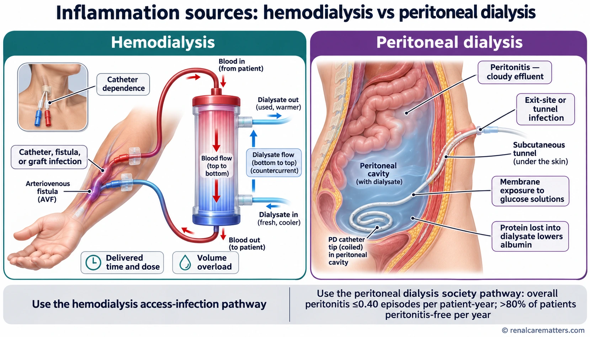
Hemodialysis sources center on the vascular access, delivered dose, and volume; peritoneal dialysis sources center on peritonitis, exit-site and tunnel infection, membrane exposure to glucose, and peritoneal protein loss that lowers albumin independently of inflammation.
- PD
- Peritoneal dialysis (PD)
Five teaching cases
These cases are composites written for teaching. They identify evidence, uncertainty, and the decision; they are not patient-specific prescriptions.
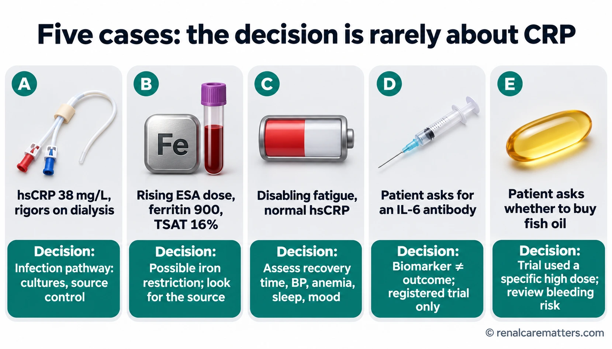
The five cases at a glance, each with its key decision. Details follow below.
- hsCRP
- High-sensitivity C-reactive protein (hsCRP)
- ESA
- Erythropoiesis-stimulating agent (ESA)
- TSAT
- Transferrin saturation (TSAT)
Translating the evidence into a dialysis service
The work described here belongs to the whole team. Nurses and access coordinators own exit-site surveillance and catheter-reduction plans; the nephrologist owns the source search, dialysis prescription, and anemia decisions; dietitians own nutrition assessment; and someone has to own symptom follow-up so that a patient's answer to “what bothers you most?” leads somewhere. Infection prevention follows the Centers for Disease Control and Prevention core interventions: surveillance, hand hygiene, catheter and exit-site care, staff competency, patient engagement, and catheter reduction (CDC, 2024).
Useful quality measures are processes and patient outcomes: bloodstream and access infection rates, catheter prevalence, completion of a source search when one is indicated, ESA hyporesponsiveness reviews, and documented symptom follow-up. Achievement of a target CRP is not a validated unit-performance measure, and a before-and-after change in a unit's average CRP does not show that care improved.
Philippine context
In resource-constrained units, the highest-yield actions are inexpensive: a structured exit-site check every session, documented delivered treatment time, dental and foot examination, a TB risk assessment where relevant, and a short symptom question. hsCRP and IL-6 assays may be unavailable or costly, and their results rarely change management in an individual patient. Investigational IL-6 antibodies are not approved products. Before discussing fish oil or difelikefalin, confirm local registration, the exact formulation available, and cost to the patient, which Philippine Health Insurance Corporation (PhilHealth) hemodialysis coverage may not include. Local infection-control protocols and the unit's antibiogram govern empiric therapy.
Open questions and the trials under way
The field needs trials that select patients by phenotype rather than a single CRP threshold, measure tissue as well as circulating inflammation, separate atherosclerotic from nonatherosclerotic cardiovascular death, account for infection as a competing harm, and collect patient-reported outcomes with complete follow-up. POSIBIL6ESKD can answer whether IL-6 ligand blockade reduces cardiovascular death or MI in a selected dialysis population; it cannot tell clinicians whether to treat inflammation in general, and it will not answer symptom questions it was not designed for.
| Trial (registry) | Population | Primary endpoint | Registry status (as retrieved) |
|---|---|---|---|
| POSIBIL6ESKD (NCT05485961) | Maintenance dialysis, ASCVD or diabetes, hsCRP ≥2 mg/L | Phase 2b: hsCRP change; phase 3: cardiovascular death or MI | Recruiting; updated September 21, 2026; estimated completion May 2029 |
| ZEUS (NCT05021835) | ASCVD + CKD + inflammation | 3-point MACE | Completed; headline neutral; full results pending |
| HERMES (NCT05636176) | Heart failure with inflammation | Cardiovascular death or heart-failure events | Terminated (registry update October 1, 2026) |
| ATHENA (NCT06200207) | Heart failure with inflammation | Kansas City Cardiomyopathy Questionnaire score | Active, not recruiting |
| ARTEMIS (NCT06118281) | Acute MI | 3-point MACE | Active, not recruiting |
Registry records were retrieved on November 2, 2026. Registration and status are not evidence of efficacy, and secondary news reports describing these programs have not always matched the registry; check the record before quoting a status.
Update log and unresolved items
- ZEUS: sponsor headline only. The full results are still to be published; this guide will be updated once the peer-reviewed report is available.
- ZEUS denominator: registry actual enrollment 6,385 versus 6,376 in a sponsor presentation. Retained as stated until the full report reconciles them.
- POSIBIL6ESKD: registry estimated enrollment and completion date differ from a trial operations page. Registry figures are quoted.
- PISCES: exact estimand, absolute first-event risks, and formulation details require full-text extraction.
- KDIGO 2026 anemia: statement numbers and grades should be checked against the full guideline before quoting them in local protocols.
Clinical pearls
For the next clinic or dialysis round
A high CRP is a reason to look, not a reason to prescribe. Ferritin lies during inflammation, so read it with TSAT. Albumin is not a nutrition score. A 90% fall in hsCRP has not yet shown benefit in any kidney outcome trial. PISCES is direct HD evidence for one fish-oil regimen, not for supplements in general. Ask patients which symptom matters most, and measure that.
Methods and source note
Content was developed from a targeted literature and registry review through November 2, 2026, informed by a Kidney Week lecture on inflammation in dialysis (Michel Chonchol, MD) of which the author had photographed slides and a partial audio recording. Lecture material was used for topic selection only; every factual claim is attributed to primary research, official guidance, registries, or the sponsor. Most study figures were verified against PubMed abstracts; full-text extraction and formal risk-of-bias appraisal were not performed. Expert nephrology review of this draft is pending.